Mijn fascinatie voor het schild begon doordat de afgelopen jaren FC Twente en Heracles beide hun circulaire jaren negentig logo hebben vervangen voor een logo met de schildvorm als basis. Waarom wil men zo graag terug naar dit inmiddels 1200 jaar oude symbool? Waarom hechte deze clubs ineens zoveel waarde aan de schildvorm als clublogo? Na deze observering zag ik in mijn omgeving steeds vaker het schild voorbijkomen. In de stad, op het internet en in de commercie. De (westerse) ontwerp cultuur hecht enorm veel waarde aan dit symbool. Ik vind zelf de schildvorm ook zeer aantrekkelijk en fascinerend, maar komt dat niet vooral door de plekken waar ik het gezien heb? Zoals ridder boeken en in Hollywood films. Speelt deze hele geschiedenis mee in hoe ik het schild zie en waardeer? Ik wil onderzoeken hoe dit iconische symbool is ontstaan en analyseren hoe we het symbool tegenwoordig gebruiken. Ook wil ik onderzoeken of dit symbool invloed heeft in het overbrengen van een saamhorigheidsgevoel en als laatst zal ik in de conclusie een wetsvoorstel doen tegen het overmatig gebruik van het schild-symbool.
Ik word wakker na een goede nachtrust. Mijn moeder roept me vanaf beneden. “Kom op Jaap het ontbijt staat klaar, opschieten!” Een zaterdag als vele anderen. Ik moet opschieten om naar een sport te gaan waarvan ik alleen het onderdeel rennen leuk vind en mijn moeder moet vroeg opstaan om mij door het ochtend proces te helpen. Eenmaal op de fiets, peinzend over de lange rit die ik nog moet maken, hoop ik dat ik een tegenstander moet verdedigen die net zo snel, of zelfs sneller is dan ik. Ik hou van die competitie, sneller zijn dan iemand die twee koppen groter is en vervolgens de bal van hem afpakken, een heerlijk gevoel. Afgezien van het feit dat ik totaal geen balbeheersing heb en dus vervolgens niet weet wat ik met de bal moet doen. Ik hou van het spel, ik kan het alleen niet goed spelen. Ik kan goed rennen, maar balbeheersing heb ik niet, wat helaas toch een essentieel onderdeel is van het spel. Gelukkig overschaduwt mijn goede ren techniek, mijn slechte voetbal kapriolen en daarnaast ben ik uit ons team niet eens degene met de slechtste balbeheersing. Wij krijgen altijd patat als we scoren, het maakte niet uit of we verloren, zolang we scoorden kregen we friet. Ik herinner mij nog goed de wedstrijd waar we met 6-0 achterstonden. We hadden geen energie meer over om er nog iets van te maken, toch bleven we volhardend doorgaan en met resultaat. We scoorden een goal! Wij waren blijer met die ene goal, dan de tegenstander was met de zes doelpunten. Deze onschuldigheid maakte het spel leuk. Na het douchen gingen we naar de kantine[Afb. 1.1], >Afb. 1.1. Mijn oude club VVZ 49. De Kantine en de kleedhokjesonze welverdiende frietjes eten. Mijn teamgenootjes waren, tijdens het eten van hun friet aan het praten over de Nederlandse Eredivisie. Hierbij noemden ze stuk voor stuk vol trots voor welke club zij waren. Ik had hier geen antwoord op. Ik had daar eigenlijk nog nooit over na gedacht. Meestal keek ik gewoon naar de samenvattingen zonder er echt bij stil te staan. Die avond ging ik eens goed zitten voor de voetbal samenvattingen. Ik was vastbesloten een definitieve keuze te maken welke club ik de rest van mijn leven ging steunen. Een club waar ik vanaf dat moment voor zou juichen en met trots over zou spreken als ze zouden winnen. Ik begon de teams te bestuderen. Veel van mijn teamgenootjes waren voor Ajax en omdat ik graag anders wilde zijn dan de rest was dit niet de club voor mij. Ik wilde wel graag een club steunen die op z’n minst in de top vijf van de Eredivisie stond, wat de keuze een stuk makkelijker maakte. Plots zag ik iets roods-wits op tv en iets in mij nam het over. Dit had niks te maken met goed doordachte keuzes, het was iets anders. Ik zag deze club spelen en alles daarbij voelde goed, de kleuren, het shirt, de sponsor, maar het belangrijkst, het logo. Het logo van deze club sprak mij zo aan dat ik er deel van wilde uitmaken. Ik zag mezelf al een shirt van deze club dragen[Afb. 1.2] >Afb. 1.2. Georginio Wijnaldum (l.) en Luuk de Jong zijn tegen FC Groningen verantwoordelijk voor de 1-0. (15-03-2015)en vol trots door de straten van Soest lopen. Nu weet ik dat deze keuze niks met de club zelf te maken had, maar toen voelde het als de juiste. Ik ben voor PSV, omdat zij het mooiste logo hebben[Afb. 1.3].Afb. 1.3. PSV Logo 2016
Ik heb in de maand november opgelet hoe vaak ik het schild-symbool tegen kwam en heb hier een foto van gemaakt. Dit om een beter beeld te krijgen hoe dit symbool in onze samenleving wordt gebruikt. Het feit dat we hier in Nederland[Afb. 1.4][Afb. 1.5] >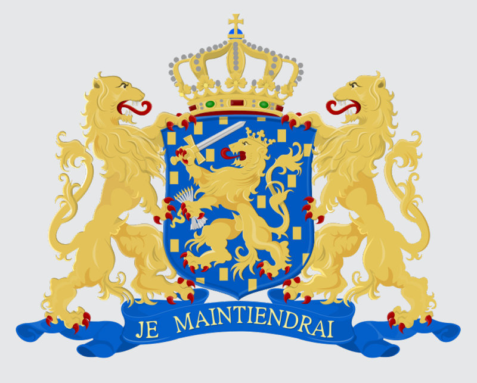Afb. 1.4. Wapen van het Koninkrijk der Nederlanden, Rijkswapen door Johannes Evert van Leeuwen (1855-1931)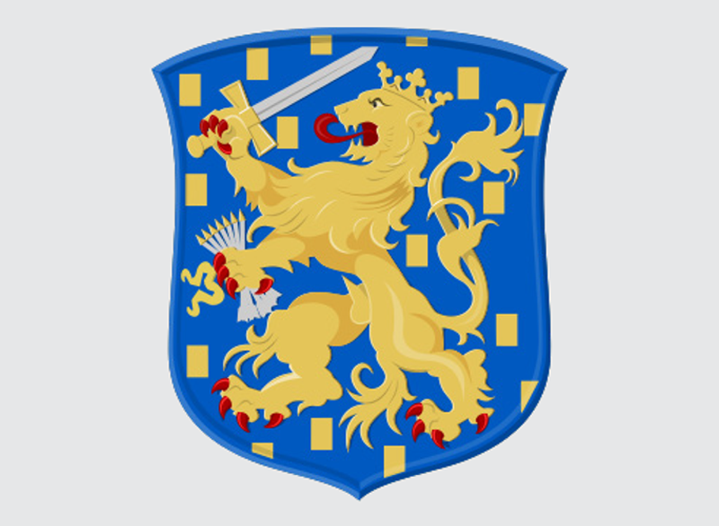Afb. 1.5. Wapen van het Koninkrijk der Nederlanden, Klein wapen door Johannes Evert van Leeuwen (1855-1931) en Europa zoveel het schild-symbool gebruiken is natuurlijk niet iets wat mij de afgelopen tijd pas opviel. Het interesseerde mij al langer, maar ik heb hier verder nooit onderzoek naar gedaan. Toen het onderwerp voor mijn scriptie langzaam op zijn plek viel, ben ik begonnen het symbool goed in de gaten te houden in mijn omgeving. Hierbij ging het dan vooral om de buitenwereld en dus niet om de elementen die ik tegenkwam op het internet. Dit omdat ik een goed beeld wilde geven hoe het in de Nederlandse maatschappij werd gebruikt en het internet meer het globale beeld is. Achteraf gezien was het wellicht beter geweest om elk schild dat ik tegenkwam te documenteren en had ik hier verder geen keuzen vooraf in moeten maken. Ook had ik ervoor gekozen om de zondagavond waarin alle Nederlandse voetbal-clubs getoond worden niet te betrekken in dit eerste visuele onderzoek. Ook dit had ik beter wel kunnen doen aangezien dit een grote rol speelt in het beeld wat wij hebben van het schild. Ondanks deze twee beslissingen denk ik toch dat het eerste visuele onderzoek een goed beeld geeft van hoe wij dit symbool gebruiken. Daarbij zal ik naast het schrijven van mijn scriptie de komende tijd verder gaan met het verzamelen van schilden zonder restricties. Ik ga ik het schild-symbool zoeken in de (marketing)communicatie van nationale en internationale bedrijven. De bedrijfscategorieën die ik hiervoor langs ga zijn sportclubs, gemeentes en commerciële instanties, maar ik hou ook rekening met een categorie ‘overige’. Op twee van deze categorieën zal ik in dit scriptie dieper in gaan. Het eerste wat mij opviel na het maken van de foto’s is dat het schild-symbool in heel veel sectoren gebruikt wordt en deze meer voorkomt dan gedacht. Als je erop gaat letten is het symbool echt overal. Daarnaast is opvallend dat er een paar manieren zijn van het gebruik van dit symbool. Zo willen sommige bedrijven/instanties het symbool er zo echt en 3d mogelijk uit laten zien. Dit zodat er geen twijfel mogelijk is dat het een schild moet voorstellen en het zo dicht mogelijk bij de realiteit moet staan (zoals het UPS-logo[Afb. 1.6],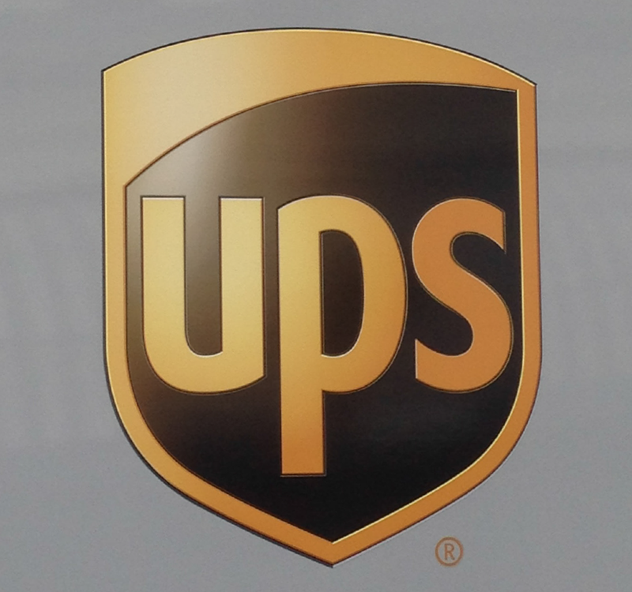Afb. 1.6. UPS-logo Dodge embleem, Cyclops-Securitylogo en het Affligem bier embleem). Daarnaast heb je de bedrijven/instanties die een logo hebben met een abstracte suggestie van 3D, zodat de diepte en het realiteitsgevoel er wel is, maar wat naar mijn idee wat minder agressief overkomt (zoals het Leger Des Heils logo[Afb. 1.7] >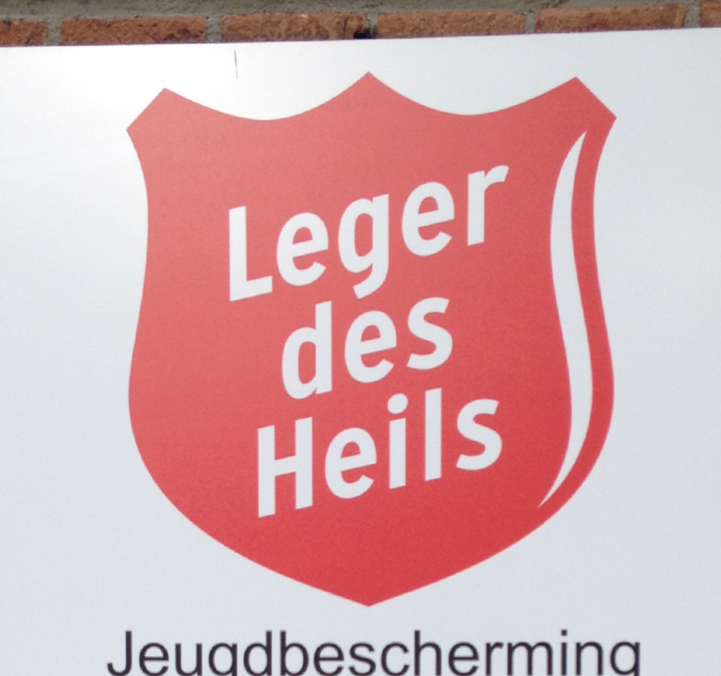Afb. 1.7. Leger des Heils logo en het Kortings-Brigade logo) en als laatst is er mijn favoriete manier van gebruik, de categorie die gewoon vlak is (zoals het Lavazza embleem, het Gemeente Den Haag logo en het Schotland embleem [Afb. 1.8]) >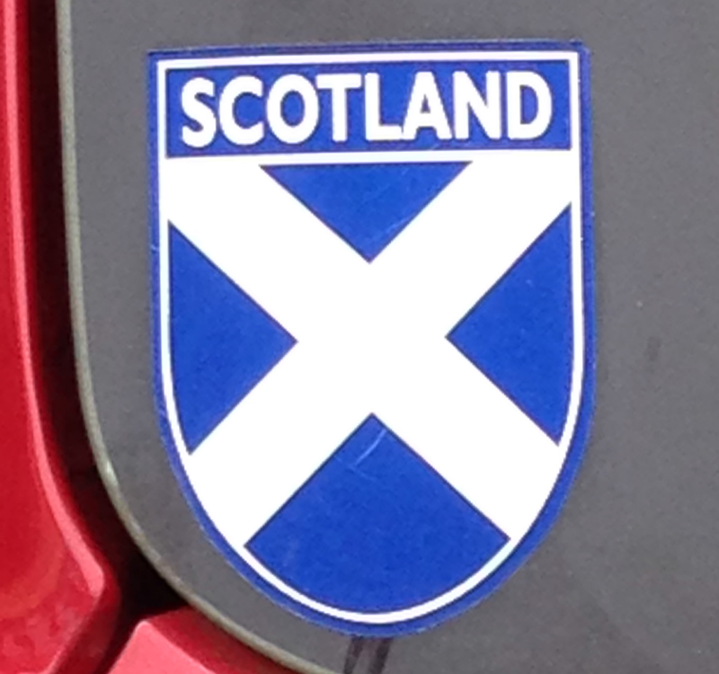Afb. 1.8. Schotland embleemwaarbij je soms zelfs niet gelijk ziet dat het een schild moet voorstellen (zoals het NOF logo en het SA dop embleem[Afb. 1.9]). Afb. 1.9. SA dop embleem Ook opvallend zijn de verschillende vormen waarin het schild wordt gebruikt. Je ziet dat het schild qua vorm een vrij breed begrip is en er veel vorm mogelijkheden zijn om een schild te visualiseren. De meeste voorkomende is het schild met de platte/licht geronde bovenkant en een ronde onderkant (zoals Schotland embleem[Afb. 1.8] en het Lavazza embleem) en de vorm met de platte/licht geronde bovenkant en een onder-kant die langzaam naar een punt loopt (zoals het UPS-logo[Afb. 1.6], het Dodge embleem en het Gemeente Den Haag logo). Wat hierin opvalt is dat de schilden met een ronde onderkant minder agressief overkomen en bijna iets vriendelijks hebben. Dan is er nog een derde vorm die vaker voorkomt en dat is het schild zonder rechte zijkanten en met drie geronde lijnen (zoals het ADO Den Haag logo, het Italiaanse BTC-embleem[Afb. 1.10] >Afb. 1.10. BTC-embleem en het Kortingsbrigade logo) Deze zou je qua uitstraling tussen de vorige twee kunnen zetten, hij oogt soms wat vriendelijk, maar heeft ook de potentie agressief over te komen. Daarnaast zijn er nog talloze andere vormen van schilden die niet direct in een groep in te delen zijn en die elk hun eigen emotie/gevoel oproepen (zoals het Milano embleem[Afb. 1.11], >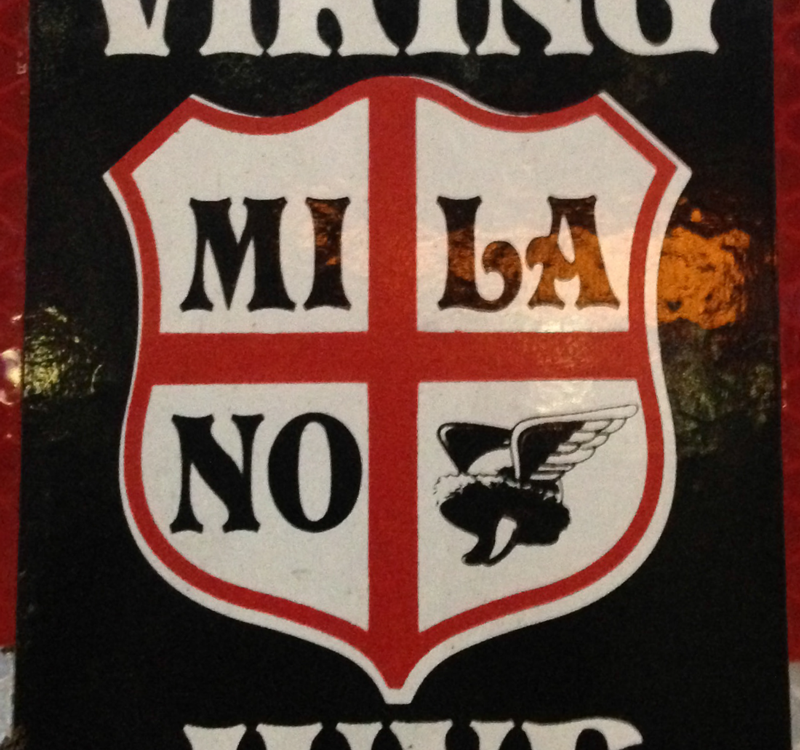Afb. 1.11. Milano embleem het Wolvaart wijn embleem en het NOF-logo). Er zijn dus talloze verschillende schildvormen die ieder op hun eigen manier iets communiceren met de kijker. 3D is iets wat mij persoonlijk als grafisch ontwerper het minst aanspreekt. Ook in het geval van UPS waarin ze zo dicht mogelijk bij de ‘realiteit’ willen komen en dus een echt schild willen suggereren[Afb. 1.6]. Dit wordt in de interface-designwereld ook wel skeuomorphism genoemd. “Skeuomorph: an ornament or design on an object copied from a form of the object when made from another material or by other techniques.”[1.12] Ik vind dit vrij absurd, aangezien het helemaal niks met deze realiteit te maken heeft. Ik heb nog nooit een UPS-medewerker in vol ridderornaat[Afb. 1.13] >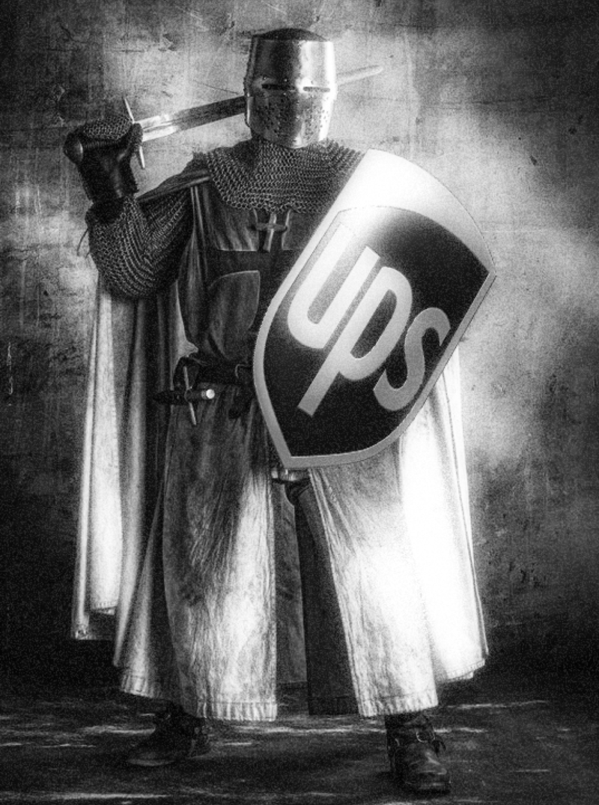Afb. 1.13. UPS medewerker in harnas, beeld bewerkt door: Jaap Smit, origineel foto door: Werner Burgstaller een pakketje zien bezorgen. Waarom wil men zo graag de suggestie wekken dat dit schild een echt schild is? Zeker als je het moderne UPS-logo vergelijkt met het UPS-logo ontworpen door Paul Rand in 1961[Afb. 1.14], >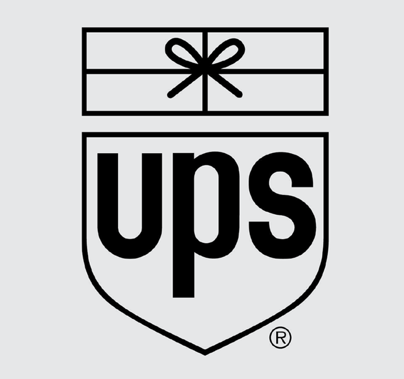Afb. 1.14. UPS logo (1961–2003) door Paul Rand wat naar mijn idee veel beter werkt. Voordat Paul Rand het logo van UPS opnieuw ging ontwerpen, had UPS ook al een 3D schild uiting[Afb. 1.15]. >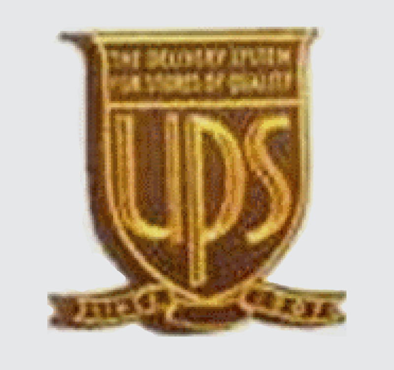Afb. 1.15. UPS logo (1937–1961) Hier zei Paul Rand het volgende over: “I do not use humour consciously, I just go that way naturally. A well known example is my identity for United Parcels Service: to take an escutcheon – a medieval symbol which inevitably seems pompous today – and then stick a package on top of it, that is funny.”[Afb. 1.14][1.16] Hierbij heeft hij het niet alleen over het oude logo[Afb. 1.15], maar indirect ook over het huidige logo[Afb. 1.6]. Je voelt dat hij wel wist dat het 3D schild achterhaald is en wilde met humor dit middeleeuwse wapen bespelen, want in zijn woorden is het onvermijdelijk dat dit soort schilden vandaag de dag pretentieus aanvoelen[1.16].
Met het onderwerp het schild van object, naar symbool, naar icoon, naar logo als onderwerp zal ik beginnen bij het begin en dus het schild als object. Wanneer is de vorm die wij nu als schild omschrijven als eerst gebruikt en waarom werd er voor deze specifieke vorm gekozen? Al gauw beland je dan in de geschiedenis van de middeleeuwen en het ridderschap. De eerste logische stap is dan ook het inlezen en het introduceren van de ridders en de periode waarin zij leefde. Het eerste wat opvalt als je je inleest in het ridderschap is dat er gelijk duidelijk wordt gemaakt dat er voor velen een compleet verkeerd beeld is van de ridders en het ridderschap. Men trekt al gauw de conclusie dat het iets Europees was en gaat er hiermee vanuit dat het in heel Europa hetzelfde betekende. Dit blijkt dus al een moeilijk punt te zijn aangezien historici het er wel over eens zijn dat het ridderschap in verschillende delen van Europa anders was geregeld, maar lopen de meningen uiteen waar deze verschillen dan precies lagen. Het gaat hier dan vooral om het Germaanse, Franse en Engelse ridderschap en de verschillen in het feodale-systeem[2.1]. “Het feodale stelsel is gebaseerd op het principe van leenheer en leenmannen; van belofte en trouw, van bewerken van land en afstaan van opbrengst. In deze feodale maat-schappij waren twee standen, die van de geestelijken en die van de adel (leenmannen). De derde stand, die van de vrije boeren en burgerij kreeg pas veel later enige vrijheid en invloed.”[Afb. 2.2][2.6] >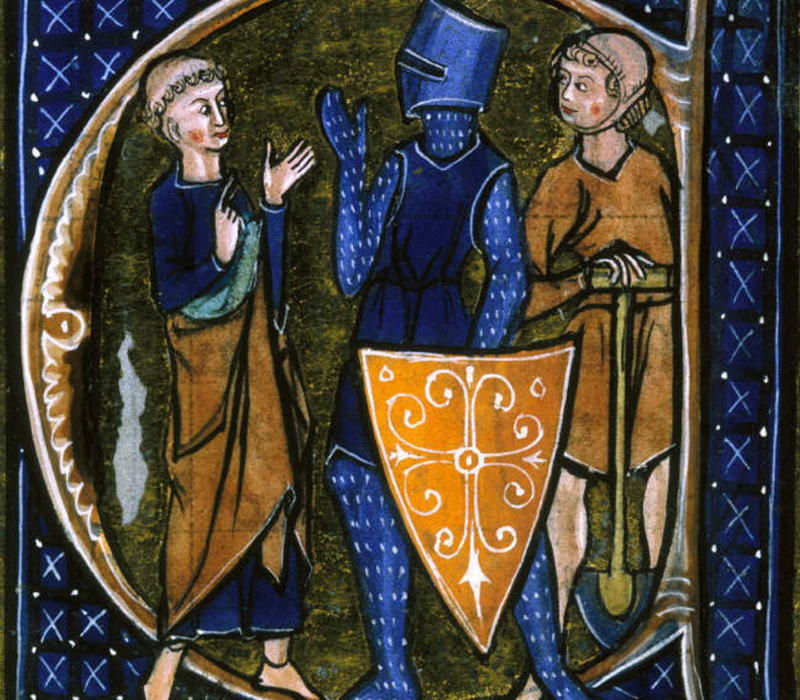Afb. 2.2. De drie standen. Cleric, Knight, and Workman. Beeld van British Library Manuscript number: Sloane 2435, f.85 Een ander verkeerd beeld van deze tijd is dat het vaak over-geromantiseerd wordt. Dit komt vooral door de kinderboeken, maar ook door de Hollywood films die over deze periode gemaakt worden. Men heeft toch een mooi beeld van de tijd van de ridders en kastelen[2.3]. Elke kleine jongen[Afb. 2.4], >Afb. 2.4. Mijn vader (links) Jaap Smit Senior toen hij 11 jaar oud was, verkleed als ridder Ivanhoe waaronder ik, wilde vroeger wel een ridder zijn. Het was echter een helse tijd[2.5]. Velen van ons zullen niet genoeg beseffen in wat voor ongelofelijk mooie tijd wij nu leven, hoe we van geluk kunnen spreken dat wij in het hier en nu zijn. De mensen uit de middeleeuwen zouden waarschijnlijk het leven geven voor een dag in 2016. Het werd niet voor niks ‘the dark ages’ genoemd. Hoewel er natuurlijk historici van mening zijn dat deze periode helemaal niet zo slecht was. Zij kijken dan echter vooral naar de groei in kunst, literatuur, poëzie, filosofie, wetenschap en architectuur, wat voor de mensheid van groot belang was[2.7]. Voor de individu was het echter een minder fijne periode. Er heerste extreme armoede, ziekte en plagen en constante oorlog. Ook lag de levensverwachting van de gemiddelde Europeaan in die tijd rond de 30[2.8], wat voor iemand zoals ik (die erg van het leven houdt) ietwat aan de korte kant is. Dit zou namelijk betekenen dat ik op dit moment al ver in mijn middelbare leeftijd zit. De periode waarin we de eerste ridders tegenkomen is in de 8ste eeuw en hoewel het lastig te bepalen is gaat men ervan uit dat deze periode rond 1500 is geëindigd[2.9]. “Aan het eind van de 8ste eeuw stichtte koning Karel de Grote van de Franken een nieuw ‘West-Romeins Rijk’. Om zijn rijk op te bouwen en te verdedigen, had Karel de Grote duizenden goed opgeleide beroepssoldaten nodig. Aan het hoofd van zijn leger stonden de ‘milities’, ruiters in harnas. Dat waren de eerste ridders van middeleeuws Europa. De troepen van Karel de Grote en zijn opvolgers waren als enige opgewassen tegen de Vikingen, die in de 9de en 10de eeuw het noordwesten van Europa onveilig maakten.”[2.10] Ook het werk van de ridders is in vele boeken en films te mooi beschreven[Afb. 2.11]. >Afb. 2.11. Roger Moore als Ivanhoe (1958)Men ziet ze als heldhaftige loyale helden die voor niets of niemand uit de weg gingen, mannen die moordden zonder enig gevoel van angst. Wat dan wordt vergeten is dat Ridders ook gewoon mensen waren. Ridders kampten vaak met hetzelfde probleem waar de hedendaagse soldaat ook vaak last van heeft namelijk ‘post traumatic stress syndrom’[2.5]. Het klinkende geluid van metaal dat op je helm of zwaard weerkaatst ging je niet in de koude kleren zitten[Afb.2.12]. >Afb. 2.12. Ridder na een hevige veldslag beeld uit de Zweedse film Arn - The Knight Templar (2007) Vele ridders hadden dan ook last van ondervoeding, slaaploosheid, oververmoeidheid, nachtmerries en angstaanvallen bij geluiden die ook maar iets op het klinken van metaal leken. Dagelijks in weer en wind op de koude harde grond slapen en als je dan wakker bent andere mensen moet afslachten en je vrienden vermoord zien worden[2.5] is vaak niet wat er goed gevisualiseerd wordt in de boeken, films of illustraties[Afb. 2.13]. >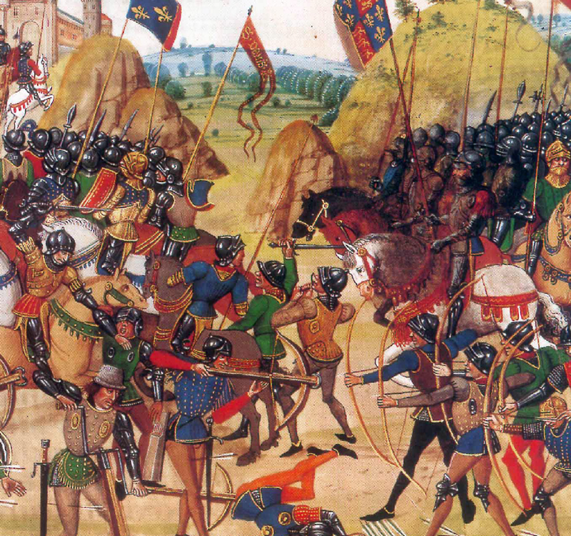Afb. 2.13. Illustratie van Jean Froissart's kronieken van de Slag bij Crécy (1345) Hoewel ik er niet vanuit ga dat ze deze gruweldaden in jongensboeken gaan zetten en dus velen van hen nog zullen opgroeien met het romantische idee van ridders[Afb. 2.12], heb ik heb mijn jongensdroom inmiddels gewijzigd naar het ‘huisje, boompje, beestje’ verhaal, ofwel de moderne ridder op het witte paard... de man met de buggy[Afb. 2.14].Afb. 2.14. De moderne familie man die zijn paard en zwaard heeft ingeruild voor het ukkie in de buggy, fotograaf onbekend
Het schild is een wapen dat door de eeuwen heen in velen verschillende vormen is gebruikt. Zelfs vandaag de dag gebruiken wij het schild nog dagelijks in de fysieke vorm. Kijk maar na elke opstand in de wereld die door de politie[Afb. 2.16][Afb. 2.17] >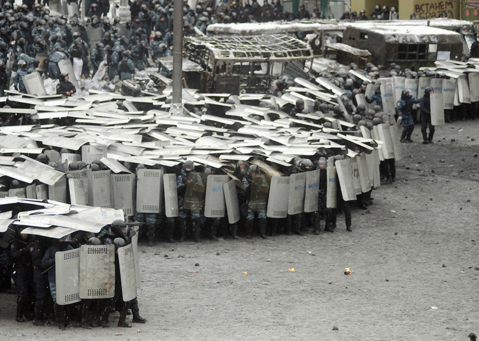Afb. 2.16. Oekraïense Riot politie zoekt dekking achter schilden na een confrontatie met pro-Europese demonstranten in Kiev. Foto door REUTERS/Levin, Maks tot stilte gebracht moet worden. In deze gevallen is het schild nog steeds één van de meest effectieve manieren om jezelf te beschermen van de menigte en tevens de menigte langzaam uit elkaar of weg te drijven. Toch heeft elk oproerpolitie korps gekozen voor de twee vormen van het schild die blijkbaar het meest effectief zijn, namelijk het ronde schild en nog populairder het door de Romeinen gebruikte rechthoek schild[Afb. 2.15]. >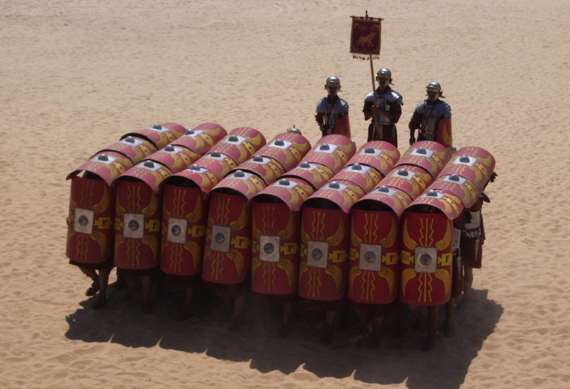Afb. 2.15. De Romeinse testudo formatie re-enacment. Foto door Neil CareyDit rechthoekige schild wordt soms zelfs op dezelfde manier gebruikt als de romeinen het gebruikten namelijk door middel van de testudo formatie.[Afb. 2.15][Afb. 2.16][Afb. 2.17] >Afb. 2.17. Paramilitaire oproerpolitie voert een oefening uit als de ‘quick response’ anti rellen eenheid in Rio de Janeiro, Brazil. Foto door Getty Images “De formatie was aanvankelijk in het leven geroepen voor gebruik bij belegeringen en werd dus vrijwel uitsluitend hierbij toegepast. Als de legionairs de vijandelijke stad moesten naderen, werd de testudo gebruikt om de soldaten te beschermen tegen de projectielen die de verdedigers vanaf de muren wierpen.”[2.18] Dat we vandaag de dag dus kiezen voor deze twee schildvormen, moet toch wel aantonen dat het symbool wat wij gebruiken voor veiligheid en bescherming helemaal niet zo’n effectief schild is. Ook na het beter inlezen blijkt dat inderdaad het schild dat wij nu zoveel gebruiken door de krachtige symboliek helemaal niet zo’n populair was bij de ridders en soldaten[2.19]. Sterker nog, het werd alleen gebruikt door ridders die al in vol harnas gekleed waren. Het was een extra tactisch middel, maar vooral een manier om te laten zien bij wie je hoorde. Het harnas bood namelijk al voldoende bescherming op zichzelf. Ridders die niet in vol harnas waren gekleed, wat de gemiddelde soldaat/ridder echt niet was, gebruikte absoluut niet dit iconische schild[2.19]. Het gaf namelijk totaal geen bescherming van de benen en/of het hoofd, door de dikte was het even zwaar als de grotere/effectievere schilden en het was zeer onhandig in gebruik[2.20]. Het feit dat wij het dus gebruiken als icoon voor veiligheid is best ironisch te noemen. Veel Germaanse soldaten kozen namelijk voor het ‘kite’ schild[Afb. 2.21] en Vikingen gebruikte het grote ronde schild[Afb. 2.21]. >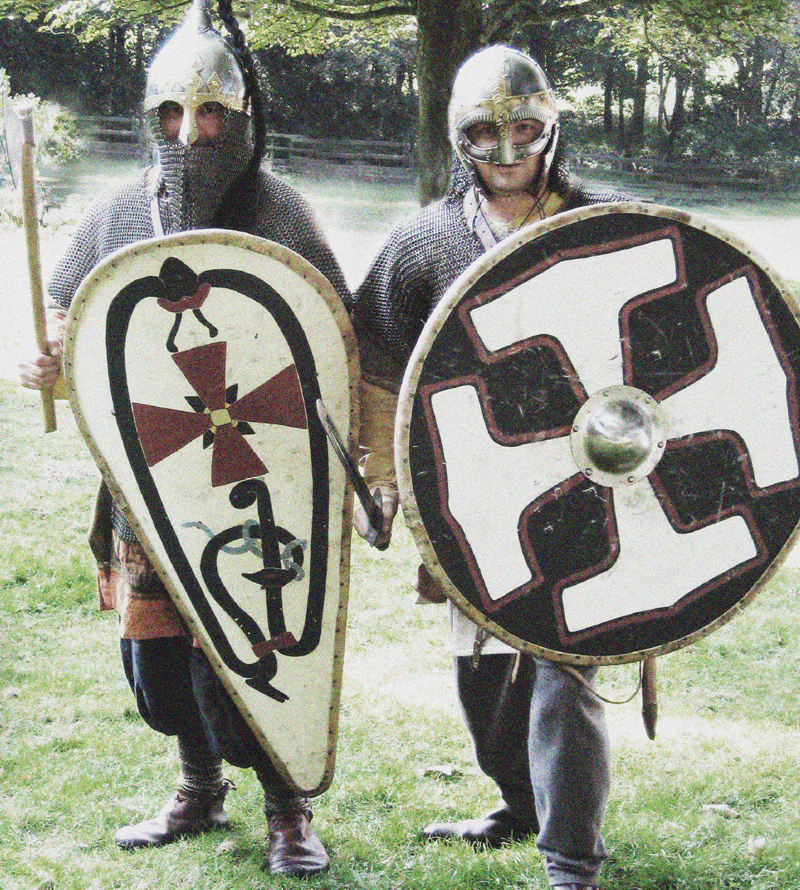Afb. 2.21. Twee acteurs die een Viking-veldslag na spelen. Links houdt de ridder een ‘Kite’ schild vast en rechts zie je een ridder met het grote ronde schild. Foto van http://www.nordmanni.co.uk Mocht je tactisch toch niet van een groot schild houden, dan was ook daarvoor een beter alternatief dan het iconische schild namelijk de Buckler. Dit extreem kleine schild met een diameter van maar 45 cm, is ligt, veel makkelijker mee te nemen en bood tactisch gezien meer mogelijkheden dan het zware iconische schild[2.22]. De voornaamste reden dat het zo iconisch is geworden komt door de heraldiek en welvarendheid die het schild en de heraldiek symboliseren. Ridders gebruikte het dus vooral om het familiewapen op te tonen[Afb. 2.23] >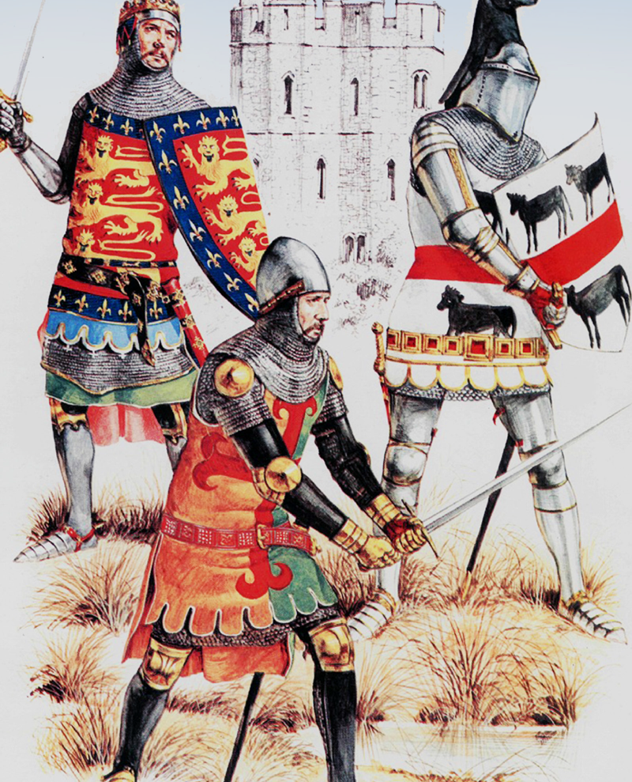Afb. 2.23. Illustratie van ridders met Heraldische wapens en kleding. Beeld van Pinterest, maker onbekenden op die manier herkend te worden voor wie je streed. Want met de compleet bedekkende harnassen en de chaos van het slagveld, was het erg handig te weten wie nu je vijand en wie nu je vriend was. De titel Ridder was in sommige landen in Europa niet iets wat je niet zomaar verkreeg. Mocht je dus gekleed zijn in vol ridder ornaat, klaar om te strijden voor jou nederzetting, jouw familie, jouw vaderland dan toonde je met trots het schild met daarop het familiewapen, maar echt praktisch was het niet[2.22].
Het tonen van kleuren op het schild was niet iets nieuws, dit deden ridders en soldaten al jaren voor de heraldiek was ontstaan. Bij heraldiek was het echter meer dan alleen een kleur op een schild. Het ging over afkomst, familiebanden en politieke banden. “Krijgers hebben altijd al tekens op hun schilden en wapenrusting geschilderd. Het bijzondere van de middeleeuwse heraldiek was dat de tekens van de ‘wapenschild’ overgingen van ouder op kind. Een ridder kon ermee laten zien bij welke familie of politieke groep hij hoorde.”[3.1] Het schild wat wij nu zullen herkennen als ‘het’ iconische schild, is deels in de heraldiek tot stand gekomen[Afb. 3.2]. >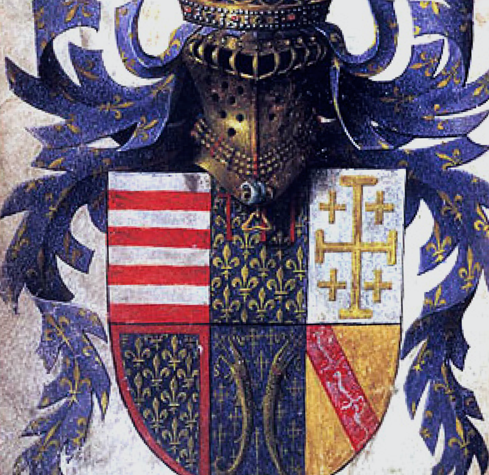Afb. 3.2. Heraldisch wapen van René d’Anjou, Koning van Naples door d’Eyck, Barthélemy (c. 1442) De voornaamste reden dat heraldiek is ontstaan is door de evolutie van het harnas. Dit bedekte in de loop van de middeleeuwen steeds meer van de ridder tot op een bepaald moment de gehele soldaat bedekt was met maliënkolder en/of platen staal. Op het slagveld kon je dus totaal niet meer herkennen wie je vriend of vijand was. Heraldiek bood hierbij hulp[3.3]. Te vergelijken met een identiteit van een bedrijf werd de heraldiek van een familie overal op toegepast, schilden, vlaggen, oorlogsbandieren, helmtekens, de kleding van ridders en de kleden van de paarden[Afb. 3.4]. >Afb. 3.4. Heraldic Chivalry door Mucha, Alphonse Langzaam ontstonden er ook regels en codes in het gebruik van de heraldiek en familiewapens. Deze codes lieten in het wapen zien van welke familie je kwam en welke politieke banden je had[3.3][Afb. 3.5]. >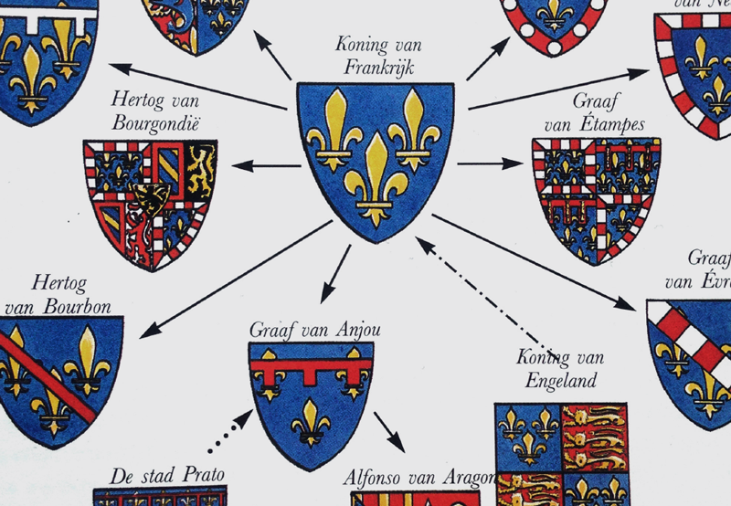Afb. 3.5. Heraldiek systeem uit het boek Kijk op het verleden: Middeleeuwse Ridders, Nicolle, David, Pagina 18 “Aan het einde van de 12de eeuw lagen de grondregels van de heraldiek vast. Elke adellijke familie gebruikte een paar vaste kleuren en standaardtekens. Dat familiewapen ging over op de oudste zoon. Jongeren zonen veranderen het familiewapen iets om hun eigen wapen te creëren, waarop hun zonen er nog meer aan veranderden. Soms kwartileerden mannen hun wapen, ze verdeelden het in vieren om het wapen van hun vrouw op te nemen, zeker als die uit een machtige familie kwam.”[3.1] Het feodale systeem lag dus aan de basis van het gebruik van heraldiek en alles wat hierbij kwam kijken. Een vorm van het feodale systeem is nog steeds sterk aanwezig in onze huidige maatschappij[Afb. 3.6][Afb. 3.7]. >Afb. 3.6. Feudalism then & now door AmendmentGazetteAfb. 3.7. You are still here door Wasserman De heraldische familiewapens zijn alleen vervangen door bedrijfsidentiteiten en de hele hiërarchische ladder die er toen der tijd was, is nu gewoon direct door vertaalt naar het kapitalistische systeem[Afb. 3.6]. Met de aandeelhouders van UPS als krijgsheren, de directeuren als de ridders en de werknemers als de knechten van de UPS-nederzetting. Volmondig zullen de knechten van UPS hun lijfspreuk/slogan roepen: “We are United problem solvers!”[Afb. 3.8] >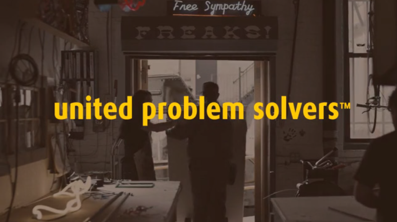Afb. 3.8. Nieuwe UPS slogan ‘United problem solvers’ oftewel ‘Verenigde probleemoplossers’ Trots strijdend voor de UPS heraldiek.
Sporten zoals voetbal, ijshockey of American Football zie ik als een strijd van middeleeuwse ridders op de middenstip van het Romeinse Colosseum. Een klein slagveld op schaal, waar je jouw strijdvaardigheid/heldhaftigheid nog kunt tonen. Met minder geweld dan in een ridderslagveld, maar wel in stadions die het Colosseum soms nietig doen lijken[Afb. 4.1]. >Afb. 4.1. Vikings Stadium vs. Colosseum Reddit account Naphini Het gebruik van heraldiek is in sport bijna vanzelfsprekend. Er liggen dan ook veel raakvlakken met het ridderschap en een sportwedstrijd. Vroeger gingen ridders van buurnederzettingen met elkaar de strijd aan voor stukken grond. Nu is sport nog de enige manier waarop steden en dorpen met elkaar de fysieke strijd kunnen aangaan en elkaar kunnen verslaan[Afb. 4.2]. >Afb. 4.2. De Gelderse Derby, NEC tegen Vitesse. Stadion spandoek met een Illustratie van een NEC speler die een Vitesse speler bij de keel grijpt, met de tekst “Grijp ze bij de strot”De passie/obsessie die hier vervolgens bij komt kijken, zeker gezien de hooligans, ligt daarbij ook niet geheel ver van wat de ridders elkaar vroeger aandeden. Alleen is het zwaard nu vervangen door de vuist. “Wapens zijn taboe. Je wordt belachelijk gemaakt in de scene als je daarmee komt aanzetten. Echte mannen vechten met blote vuisten.”[4.3]. De Hooligans, gekleed in de kleuren van de stad/club waar zij voor strijden en zwaaiend met vlaggen en wimpels, zo staan de twee concurrerende groepen tegenover elkaar[Afb. 4.4], alsof ze zich op een middeleeuws veldslag bevinden[Afb. 4.4]. >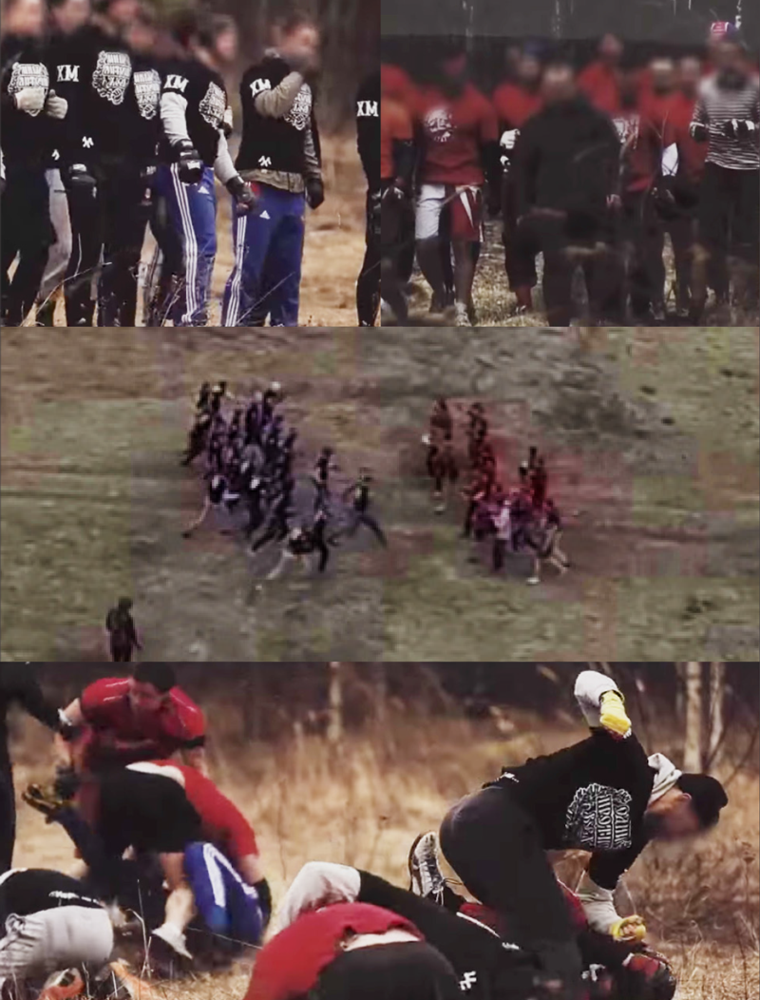Afb. 4.4. Ustawka: Zenit vs. Spartak 2014 Screenshots YouTube video van gevecht tussen Russische voetbalsupportersKlaar om te strijden voor wat? Een symbool, een kleur, een logo, maar voor hun een strijd om broederschap, saamhorigheid, zich één voelen met de club. “Ze vertellen over vurige clubliefde, het ontstaan van hooligan-anthems en gedragscodes voor voetbalgeweld.”[4.5]. Gelukkig is dit een kleine groep en zijn er ook fans die zonder geweld deze strijd in het stadions kunnen waarderen, maar ook bij deze fans gaat het om het vinden van een plek waar ze zich één mee kunnen voelen. Ergens bij kunnen horen. Men voelt zich verloren en zoekt een plek van samenkomen. Ze zien allemaal te veel waarde in iets wat helemaal niet zo waardevol is. Tegenwoordig is het niet makkelijk je één te voelen met een groep mensen. Zo had je vroeger nog de kerk waar men samen kwam en er een band ontstond met mensen, omdat zij uit dezelfde regio achter hetzelfde (waan)ideeën stonden. “Het in de kerk samenkomen was niet alleen een kwestie van gemeenschappelijk bidden, maar het was ook een wijze waarop groepsidentiteit tot uitdrukking werd gebracht. Het verschafte een gevoel van erbij horen, een gevoel van ergens thuis zijn.”[4.6]. Nu kunnen deze mensen alleen nog terecht bij de lokale voetbalclub om dit soort broederschap te vinden. “De komst van de televisie heeft volgens Morris het aantal gelegenheden voor stedelingen om bijeen te komen en te voelen dat men deel uitmaakt van gemeenschap verder verminderd. ‘Voetbalwedstrijden overleefden deze veranderingen echter en hebben een steeds belangrijkere rol verworven als een middel om lokale binding te representeren.”[4.6]. Dit zijn mensen waarbij het elftal maar een klein onderdeel is van het geheel. Een onvolwaardige overgave voor de club en voor het embleem. “Our Club, Our Crest, Our Life”[Afb. 4.8] “Dat voor de harde kern deze liefde zelfs heel erg groot is, is logisch. Zij gaan voor hun club door het vuur. Ze willen de eer en status van hun club hooghouden.”[4.7]. Ik denk dat het schild-symbool hier een enorm grote rol in speelt. Het gevoel van het strijden voor je club wordt naar mijn idee versterkt door een schild embleem[Afb. 4.8]. >Afb. 4.8. Liverpool fans met een stadion banner. Op de banner staat “Our Club, Our Crest, Our life” met daaronder het liverpool schild embleem. Foto door Stu Forster Sowieso is het schild, gezien de geschiedenis direct te linken aan geweld[Afb. 4.9] >Afb. 4.9. After Bannockburn. Documentaire over hoe een Schots leger 700 jaar geleden de Engelse uit Ierland probeerde te verdrijven. BBC Northern Ireland, BBC Scotland, RTÉen ik denk dat mede hierdoor, in bepaalde situaties, een schild geweld ook extra kan oproepen. Ook hierbij speelt mee hoe we zijn opgegroeid met het schild-symbool. Je kent het bijvoorbeeld door de Hollywood films waarin soldaten en ridders elkaar strijdvaardig afslachten[Afb. 4.10]. >Afb. 4.10. Battle of Stirling Bridge (11-09-1297), De Schotten tegen de Engelsen beeld uit de film Braveheart (1995) Dit zal je onvermijdelijk meenemen in het zien van een schild-symbool. “De mens is nu eenmaal een subjectief wezen, dat zijn eigen milieufactoren onvermijdelijk meebrengt bij alles wat het doet en zegt. Daarvan is hij zich meestal niet eens bewust en daarom kan hij die karakteristieke trekjes niet verdoezelen.”[4.11]. Ik wil hier niet mee zeggen dat clubs met een schild logo gewelddadiger zijn, wel denk ik dat het gebruik van schild emblemen in sport bepaalde instincten oproept en dus in sommige situaties net de druppel kan zijn. Het zal soms werken als een rode lap op een stier[Afb. 4.12]. >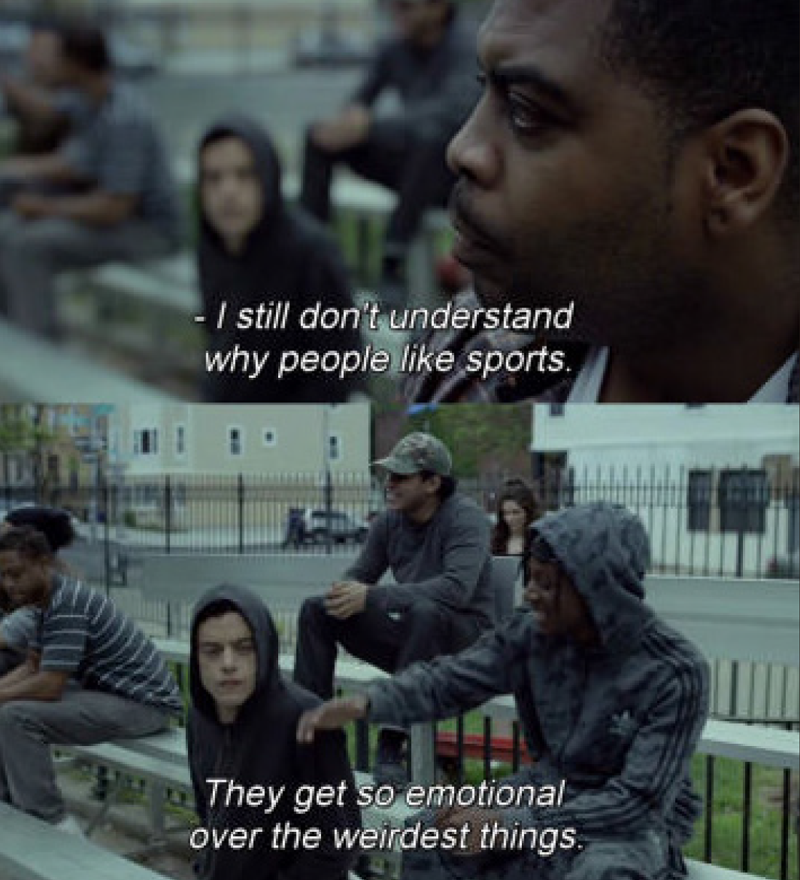Afb. 4.12. Scene uit Mr. Robot. “Ik begrijp nog steeds niet waarom mensen van sportwedstrijden houden. Ze worden zo emotioneel over de meest vreemde dingen.”Naast dat het soms agressie kan opwekken denk ik dat het schild embleem in de positieve zin ook een grote rol speelt in het saamhorigheidsgevoel van een club. Naast de geschiedenis van een fysiek wapen heeft het schild namelijk ook de heraldische geschiedenis. Het symbool voor een nederzetting. Een gemeenschap waar men zich één mee voelde. Waarvoor men met elkaar streed tegen ongewenste figuren en voor elkaar door het vuur gingen. Je vader was verbonden met het wapen van jouw nederzetting dus jij was verbonden met het wapen van je nederzetting. Zoals clubliefde tegenwoordig ook wordt doorgegeven van vader op zoon, of zoals veel voetballers en voetbalfans het verwoorden “Het zit in je bloed”[4.13][4.14]. Zoals ik al eerder aangaf is dit denk ik wat veel mensen missen, een groepsgevoel met iets op kleinere schaal dan Nederland of je provincie. Iets wat goed te overzien is en waarbij je jouw positie in het geheel duidelijk kan waarnemen. “De maatschappelijke behoefte aan gemeenschap, samenkomst en het verbinden van allerlei mensen is reëel en manifest in de samenleving aanwezig.”[4.15]. Dus hoewel een schild agressie kan stimuleren denk ik ook dat het een hele waardevolle positieve kant heeft in het tegengaan van een individuele samenleving en het juist een groepsgevoel suggereert en/of creëert. Deze tweedeling in één symbool is moeilijk te splitsen, maar is zeker niet onmogelijk. Commerciëlen instanties zijn heel goed in het weglaten van de negatieven symboliek van het schild en zorgen ervoor dat ze alleen de positieve kant van het symbool communiceren. Maar wil een sportclub wel alleen de positieve kant communiceren? Ze moeten er toch ook angstaanjagend uitzien. De vijand moet toch lichtelijk geïntimideerd zijn door het embleem. Toch? Nou niet als je kijkt naar de kampioen van de Engelse Première League in 2016. Leichester City[Afb. 4.16], >Afb. 4.16. Spelers van Leicester, getraind door Wes Morgan en als manager Claudio Rianieri tillen de Premier League beker van 2016 boven hun hoofd. Beeld via Getty Images door Griffiths, Laurenceeen regelrechte underdog. En hun embleem? Waarschijnlijk staat deze in de top vijf van meest vriendelijk ogende club logo’s van Europa. Een circulaire logo in de kleuren lichtblauw, geel en wit. Met in het midden van het embleem een vriendelijke vossenkop met zijn hoofd rustend op een bloem[Afb. 4.17]. >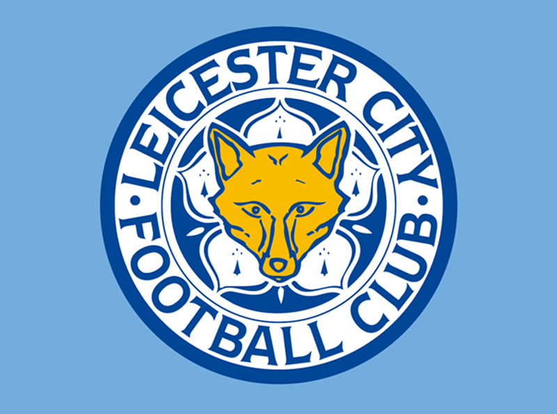Afb. 4.17. Leicester City Football Club logo (2016) En juist zij zijn de Engelse landskampioen. Ik denk dat naast het feit dat de club al een underdog was en dus vele tegenpartijen al niet onder de indruk waren van het elftal, het logo[Afb. 4.17] hier verder ook niet echt bij hielp. Het spel, daar gaat het om en dat hebben ze laten zien en bewezen[Afb. 4.16]! Dus weg met die agressieve logo’s en emblemen. Een schildvorm is toegestaan, maar dan wel in het roze, met een lichtblauw parkiet en een paarse bloem! Voor het visuele onderzoek ben ik eerst naar het schild gebruik bij nationale clubs gaan kijken. Hierbij heb ik zowel de Eredivisie als de Nederlandse Jupiler League bestudeerd. Ik denk dat zeker een kwart van de professionele Nederlandse voetbalclubs een schildvorm gebruiken als club logo. Daarna ben ik begonnen met de Duitse Bundesliga en heb ik een kleine start gemaakt het het walhalla van de schild logo’s, de Engels voetbalcompetitie. Met vier divisies kijkwaardig voetbal en enorm gebruik van het schild-symbool, zijn de schilden die ik nu laat zien pas het topje van de ijsberg van Engeland en al helemaal als je kijkt naar de wereld. Het meest opvallende aan dit visuele onderzoek is dat de intimidatie factor best wel ver uit elkaar ligt. Zo heb je de emblemen van Vitesse[Afb. 4.18], FC Twente[Afb. 4.19], Heracles[Afb. 4.20], FC Oss, FC Dordrecht, RB Leipzig, FSV Frankfurt[Afb. 4.21], FC Ingolstadt 04[Afb. 4.22], Arsenal[Afb. 4.23] en West Ham United die vrij agressief overkomen. >Afb. 4.18. Vitesse logo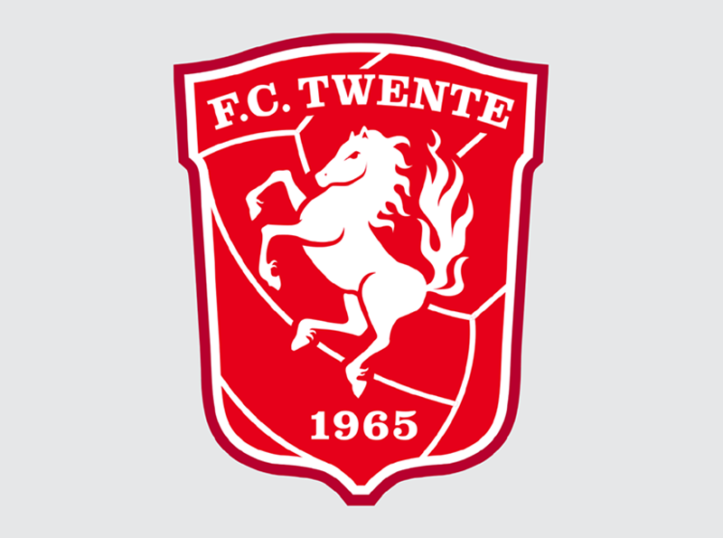Afb. 4.19. FC Twente logo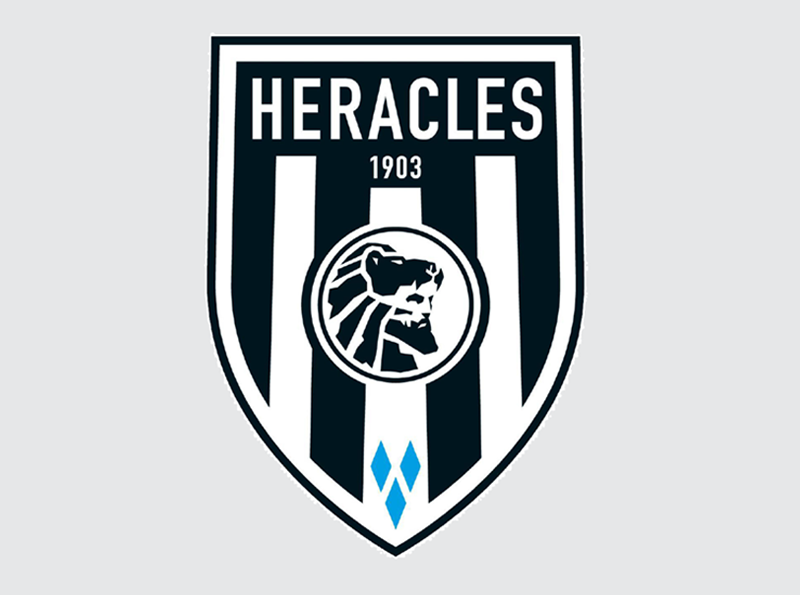Afb. 4.20. Herhacles logo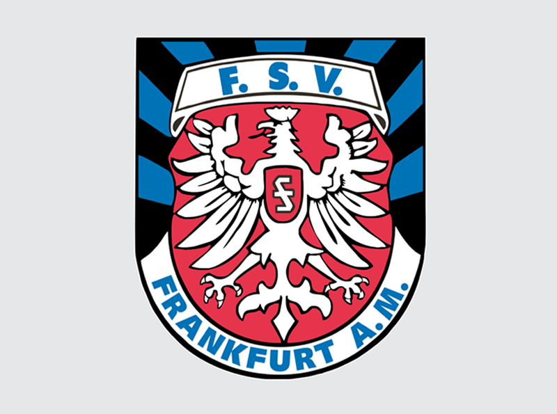Afb. 4.21. FSV Frankfurt logo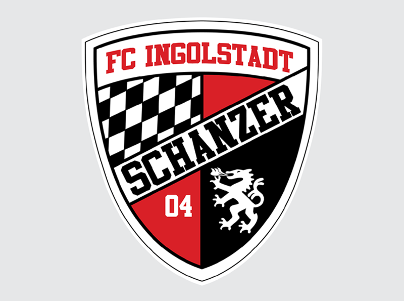Afb. 4.22. FC Ingolstadt 04 logo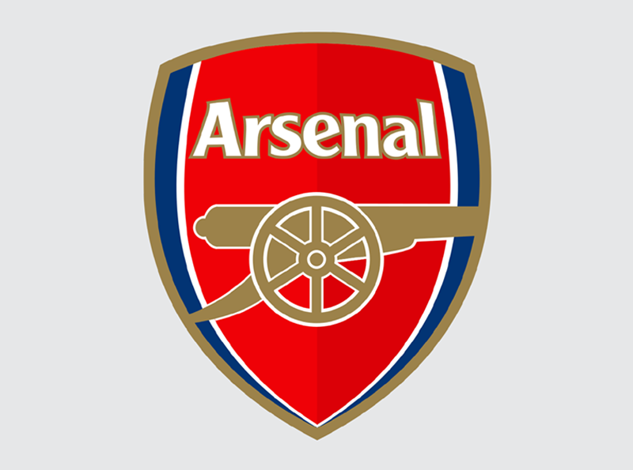Afb. 4.23. Arsenal logo Maar zo zijn er ook emblemen die er best vriendelijk uitzien zoals PEC Zwolle, ADO Den Haag, Heerenveen[Afb. 4.24], met als meest vriendelijk ogende logo’s die van Norwich City en West Bromwich Albion[Afb. 4.25]. Deze laatste twee nemen mijn voorstel van een vriendelijke vogel op het schild ter harte. >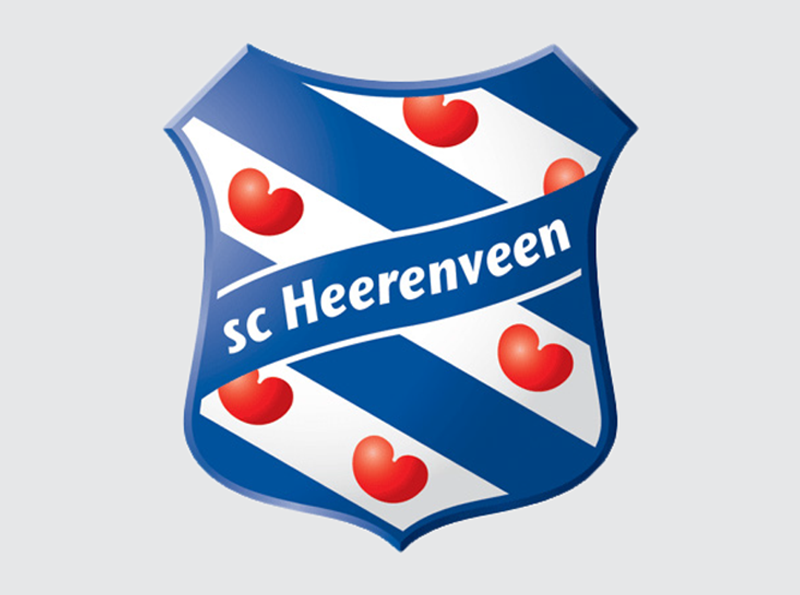4.24. Heerenveen logo4.25. West Bromwich Albion logo De verhouding tussen de agressievere logo’s en de vriendelijke ogende logo’s is niet geheel verrassend. Dat deze logo’s verschillende uitstralingen hebben komt in eerste instantie niet door de vorm van het schild, maar vooral door wat er op het schild wordt afgebeeld en de illustratie stijl daarvan. Een vriendelijk schild logo is gezien West Bromwich Albion[Afb. 4.25] dus zeker mogelijk. Hierbij roep ik dan ook de voetbalclubs met een agressiever logo op om voor een wat vriendelijker embleem te gaan, om zo vervolgens kampioen te worden, dat is pas een prestatie[Afb. 4.16] en dat geeft het embleem zijn waarde[Afb. 4.17]!
De quote hieronder is een tip die je mee krijgt van onze vrienden van marketing-partners.com. De lezer mag hiermee doen wat hij of zij wilt. Voor mij is dit alleen maar een bevestiging van de fake-heid waarin we tegenwoordig leven. Iets creëren op basis van een geschiedenis die het zelf niet heeft. Men neppen door gevoelens te suggereren die een bepaalde vorm met zich meebrengt, maar alsnog vallend onder de titel Grafisch Ontwerp. Dit is voor mij een lijst met punten waardoor ik het schild juist niet meer zou willen gebruiken, terwijl ik juist zoveel liefde voel voor deze vorm. Markting-partners.com, bloedzuigers van het grafisch ontwerp. “Waarom een schild of wapen gebruiken?” “Een schild ontwerp communiceert stabiliteit, bescherming, duurzaamheid, traditie, soliditeit, mannelijkheid, taaiheid, moed, vertrouwen, niet terugtrekken, zonder overgave. Een wapenontwerp communiceert traditie, traditioneel, officieel, historisch, kracht, soliditeit, diplomatiek. Wanneer een bedrijf een nieuw logo creëert en het onderzoek laat blijken dat één van deze punten van waarde is, dan kan deze vorm van ontwerp in één iconische, bondige, op zichzelf stand embleem een klassiek authentiek logo vormen.”[4.26][Afb. 4.27] >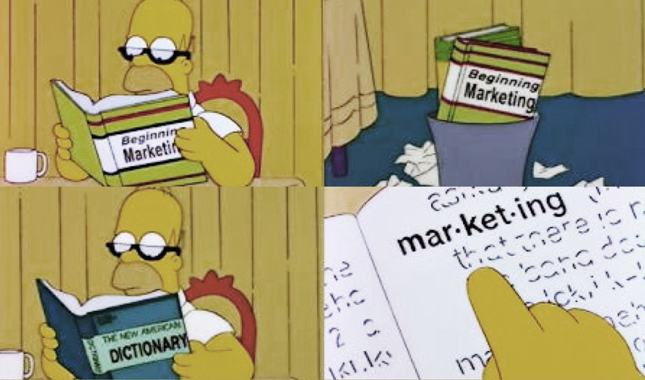Afb. 4.27. Homer Simpson leert marketing Mensen een veilig gevoel geven bij hun aankoop is natuurlijk iets wat commercieel gezien een zeer verstandige keus is. Een zekerheid meegeven dat bijvoorbeeld je pakketje wordt beschermd door de ridders van UPS[Afb. 1.13][Afb. 4.28], >Afb. 4.28. Bestelbus van de UPS ramt huis in Ohio. “Niemand was thuis toen de bestelbus het huis in reed. De bestuurder is met verwondingen aan het hoofd naar het ziekenhuis vervoerd, maar maakt het goed” http://www.wcpo.com/news/ups-truck-crashes-into-ohio-homezullen klanten waarderen of dat je product veilig is bij het gebruik[Afb. 4.29] >Afb. 4.29. Philips televisie die in brand staat. Screenshot uit een youtube video van RODALCO2007 https://www.youtube.com/watch?v=jZLk79hTbBA zoals Philips na de re-design van de huisstijl[Afb. 4.30] >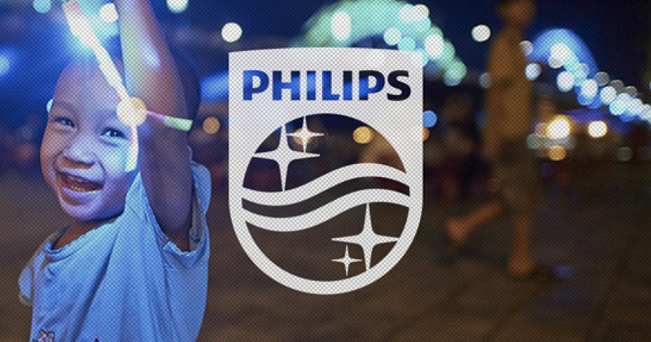Afb. 4.30. Philips merk identiteit redesign. Logo en beeld onderdeel van de nieuwe huisstijl weer wilt communiceren. “Het staat juist voor innovatie, het combineert de inspiratie uit het verleden met de innovatie van de toekomst. Het straalt vertrouwen en kwaliteit uit en weerspiegelt de historie van Philips. We hebben onderzoek gedaan onder consumenten en daaruit bleek dat mensen het inspirerender vinden als we niet alleen onze bedrijfsnaam, maar ook het schild laten zien. Het zorgt voor meer onderscheid.”[4.31] Aldus Frans van Houten, ceo van Philips. Vanuit commercieel oogpunt kant het schild dus economisch verantwoord zijn. Zeker als je een alcoholisch drank merk begint of een bedrijf in internetbeveiliging. Zo wil men bij alcoholische dranken de illusie van historie creëren en bij internet beveiliging gaat het om de illusie van vertrouwen[4.26], maar moet je het vertrouwen in veiligheid niet eerst bewijzen en moet je historie niet gewoon hebben voordat je er een schild op kwakt? Nou niet dus als je de inkomsten wil zien stijgen, misschien wel als je studeert aan de kunstacademie en denkt dat de wereld nog een deel bestaat uit eerlijke mensen (let op: “Dramatiseren van je merk leidt tot excellente klantervaring, aldus Shaun Smith”[4.32], dus dit zal bij een scriptie ook geen kwaad kunnen). Moet het schild-symbool niet een beschermgoed worden wat je alleen kan gebruiken na minstens 200 jaar een bedrijf te zijn of minstens 30.000 mensen te hebben beschermd (deze getallen zijn overigens totaal willekeurig en worden alleen gebruikt om een statement mee te maken). Moet het schild-symbool niet op een bepaalde manier beschermd worden tegen het overtollige gebruik ervan? Het schild is namelijk leeg aan het raken, het is op. Als een oud paard waar nog te graag op gereden wordt[Afb. 4.33]. >Afb. 4.33. Metafoor voor het waarde verliezende schild icoon. Deel van het schilderij Remnants of an Army door Butler, Elizabeth. Beeltenis van de aankomst van de assistent-chirurg William Brydon in Jalalabad op 13 januari 1842 Hij kan niet meer, hij is uitgeput en zal eenzaam en versleten in elkaar storten om zo vervolgens niets meer te betekenen. Dit is ook goed te zien in het visuele onderzoek. Bijvoorbeeld het merk Tensor[Afb. 4.34]. >Afb. 4.34. Tensor logo een merk skate trucksEen bedrijf dat skate trucks[Afb. 4.35] verkoopt (het deel waar de wielen aan vast zitten). Skaten is sowieso al iets waarbij je valt en je nooit volledig veilig bent. Waarom moet een dergelijk bedrijf dan een schildvorm gebruiken als onderdeel van het logo? Je voelt je er niet veiliger door, want vallen doe je toch wel en ook het product zelf stijgt in mijn optiek niet in kwaliteit met een beeldmerk als dit. Als ik het logo van Tensor op hun producten[Afb. 4.35] >Afb. 4.35. Tensor truck. Het schild logo staat op het deel wat aan het skateboard wordt bevestigd, in het midden zie voel ik er echt niets bij, het symbool voelt compleet leeg aan. Het voegt niks toe in hun bedrijfscommunicatie en ze hebben dit gekozen omdat ze denken hiermee de doelgroep aan te spreken. Hier is verder niks mis mee, maar deze leegte zal niet alleen ik voelen. Het feit dat ze iets willen uitstralen wat ze niet zijn zal niet alleen mij opvallen maar ook de doelgroep zal dit zien. Ik ben er daarom ook van overtuigd dat een logo als dit de verkoop niet zal verbeteren en alleen maar zorgt voor meer onrust. Een ander voorbeeld is Victoria Secret[Afb. 4.36], >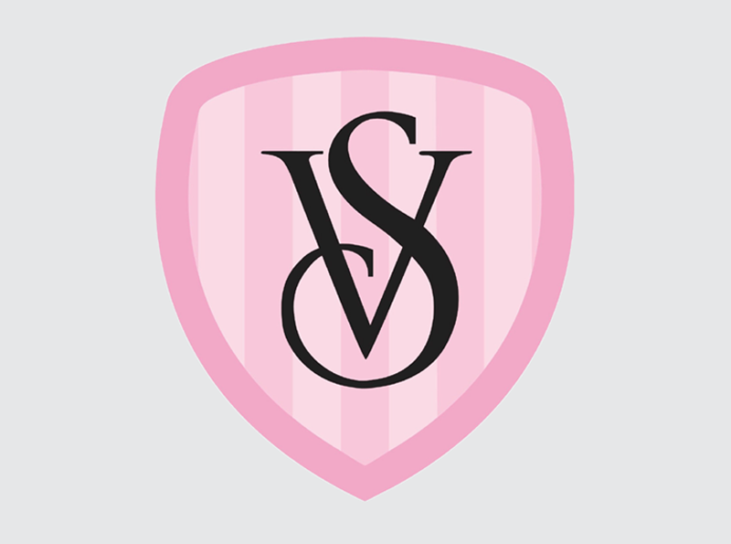Afb. 4.36. Victoria Secret embleemwat moeten mooie meisjes in engelen pakjes[Afb. 4.37] >Afb. 4.37. Victoria Secret show (2014)in vredes naam met een schild embleem. De enige reden die ik kan bedenken is dat ze luxe en klasse willen uitstralen. Echter de manier waarop dit schild is ontworpen, namelijk met een extreem roze kleur en overdreven bollingen en rondingen lijkt het eerder op een siliconen BH vulling [Afb. 4.38] >Afb. 4.38. Het Victoria secret embleem ter vergelijking op een omgedraaide Siliconen BH vulling pad. De gelijkenis is, zeker gezien het bedrijf, op zijn minst treffend te noemen dan op een luxueus schild. Nu heb ik sowieso mijn twijfels bij de argumenten voor de keuze van het schild logo bij bedrijven. Ik heb bij een aantal van deze bedrijven eens opgezocht waarom ze het schild hebben gekozen. Ze zitten allemaal niet heel ver van wat onze vrienden (of waren het nou bloedzuigers?) van marketing-parners.com ons adviseren bij het gebruik van dit symbool[4.26]. Dit heeft de ABN Amro erover te vertellen: “Ons schild[Afb. 4.39] >Afb. 4.39. ABN Amro schild, onderdeel van het logo staat voor betrouwbaarheid, traditie, veiligheid en bescherming. Allemaal van cruciaal belang voor onze klanten: zij moeten erop kunnen vertrouwen dat hun vermogen of bedrijf in veilige handen is. Daarnaast symboliseert het schild dynamiek, kracht, onze omvang en groeipotentieel. Het roept een beeld op van ervaring en professionalisme en het is een internationaal symbool; krachtig in zijn eenvoud.”[4.40]. Hoe heerlijk ironisch is het om dit slap geouwehoer te lezen na net door de grootste banken-crisis sinds 1930 te zijn geloodst. Het is vrij absurdistisch dat ze dit nog steeds durven te beweren. Na de wereldwijde kredietcrisis van 2007-2008 en de nationalisatie van ABN Amro[4.41] had het ze zeer goed gestaan als ze het logo hadden veranderd naar iets wat meer bij ze past. Een doorgebroken dijk bijvoorbeeld[Afb. 4.42]! >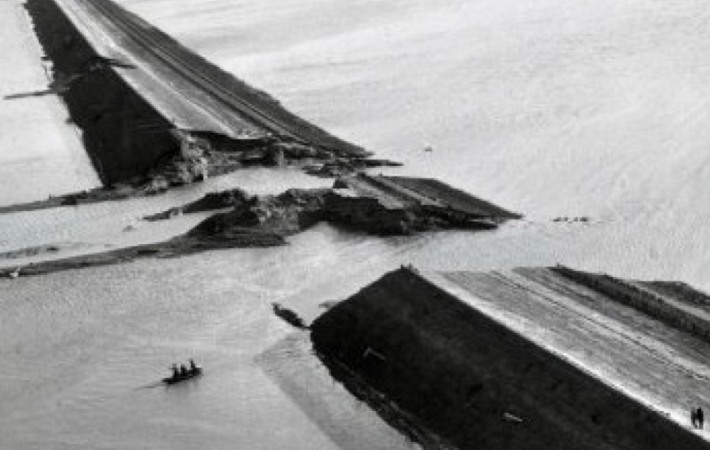Afb. 4.42. Moodboard beeld voor het nieuwe logo van ABN Amro. Luchtopname van een doorgebroken dijk. Nederland, plaats onbekend (februari 1953)En vervolgens de Nederlandse burger laten dweilen... met de dijk open. “In de economie moet ook ruimte zijn voor banken die meer risico nemen, maar dan wel zo ingericht dat als het misgaat de belastingbetaler daar niet de prijs voor betaalt.” “Als de komende twee jaar de rest van ABN Amro tegen dezelfde prijs wordt verkocht, zal de Staat 3 miljard euro op de bank verliezen.”[4.43] Ook bij andere merken, K-Swiss[Afb. 4.44][4.45], UPS[Afb. 1.17][4.46], Barclays[Afb. 4.47][4.48] en Abarth[Afb. 4.49][4.50] heb ik de redenen voor het schild gebruik onderzocht en ook zij hadden de mooie marketing-parners.com redenen. >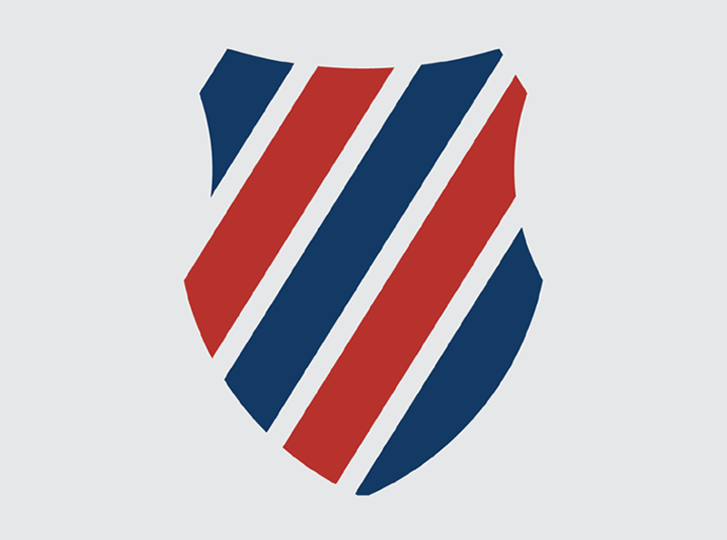Afb. 4.44. K-Swiss schild, onderdeel van het logoAfb. 4.47. Barclay’s schild, onderdeel van het logoAfb. 4.49. Abarth embleem, eigendom van FiatBij deze merken is dit echter al een stuk minder erg (in vergelijking met ABN Amro) aangezien de acties van deze merken en de redenenen voor het gebruik van het schild elkaar niet zo enorm tegenspreken, maar ook zij gooien met redenen als ‘het hebben van een geschiedenis’ en ‘het creëren van vertrouwen’. Wat opvalt na deze zoektocht voor redenen van het schild-gebruik, is dat hoe onlogischer het schildgebruik aanvoelt, hoe moeilijker er ook maar iets over te vinden is. Zoals het schild van Victoria Secret[Afb. 4.36][Afb. 4.52] of Tesla[Afb. 4.51][Afb. 4.52], >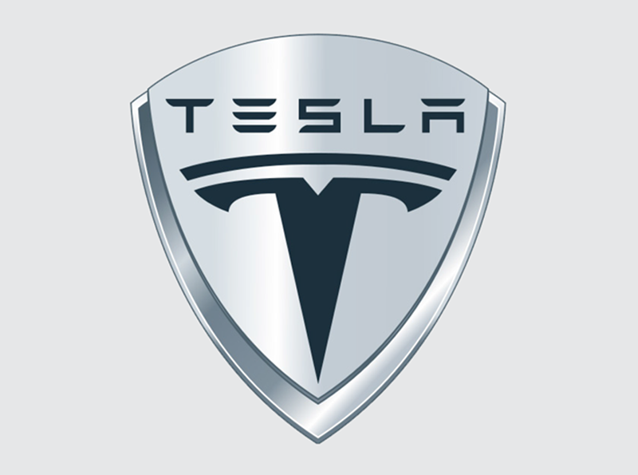Afb. 4.51. Tesla’s oude logo embleem. Blijkbaar voelde Tesla Motors zelf ook de leegte van het schild-symbool in hun logo. Ze hebben namelijk sinds kort een aangepast logo zonder het schild in gebruik genomenAfb. 4.52. Lege hulsdit soort bedrijven maken totaal niet duidelijk waarom ze deze vorm gebruiken in de marketingcommunicatie, wat alleen maar de leegte van hun merkemblemen bevestigt[Afb. 4.52]. De commerciële schilden hebben in het algemeen wel al veel minder het agressieve negatieve gevoel dan wat sommige sport logo’s oproepen. Daarnaast valt het ook op dat ze soms het schild op een subtielere manier tonen en hiermee het gehele agressieve/negatieve aspect achter zich kunnen laten. Het gaat hierbij dan om ABN Amro[Afb. 4.39], Tag Heuer, Vicks[Afb. 4.53] en F-Secure[Afb. 4.54]. >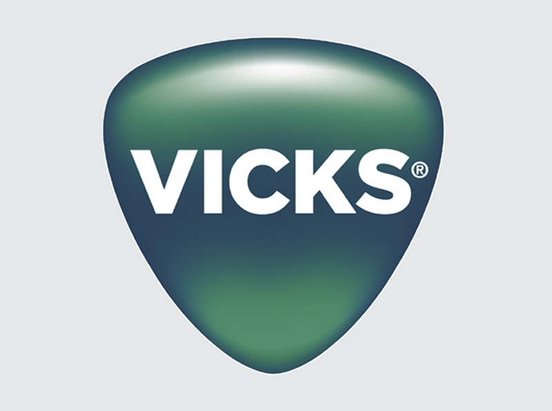Afb. 4.53. Vicks logo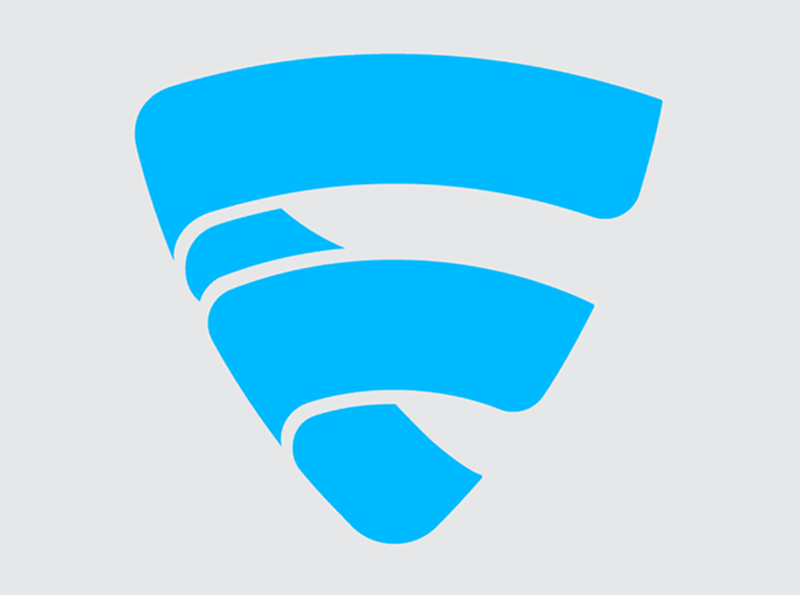Afb. 4.54. F-Secure schild, onderdeel van het logoJe krijgt als je naar hun logo’s kijkt wel de boodschap van een schild mee, de bedrijven voelen vertrouwt en/of je vertrouwt het product dat ze verkopen. Hoewel ik dus wat tegen het commercieel gebruik van het schild heb (zeker als het niets toevoegt[Afb. 4.36][Afb. 4.51][Afb. 4.52]), heb ik er al minder problemen mee met hoe deze laatstgenoemde bedrijven de vorm naar hun hand hebben gezet. Helaas maakt het feit dat ABN Amro en Vicks een goed marketingbureau hebben ze nog geen goeie bedrijven. De reden voor ABN Amro heb ik net al gegeven. Bij Vicks ontdekte ik na een beetje googelen al snel blijkt dat ze hun producten op dieren testen[4.55]. Voor Vicks is het schild dus wel heel erg subjectief, het staat voor de bescherming van ons als mens, de rest van de wereld kan Vicks ‘aan den reet roesten’. Mijn voorstel voor Vicks is dan ook een met erosie aangevreten schild logo[Afb. 4.56] >Afb. 4.56. Vicks logo voorstel door Jaap Smit. Na blijkt dat Vicks hun producten op dieren test is het schild wel heel subjectief. Daarom een logo voorstel dat beter zou passen bij de bedrijfsinstelling van Vickste nemen, in plaats van het schild dat ze nu hebben. Los van de slechte gewoontes van een bedrijf als Vicks, is in mijn optiek het logo wel een goed voorbeeld om het schild toch commercieel te gebruiken. Doe er iets anders mee, verras de consument (met nadruk op de consument, flappie kan volgens Vicks nog wel even wachten[4.55][Afb. 4.56]), probeer ons op een andere manier vertrouwen te geven in plaats van zonder enige inspiratie de schildvorm te nemen om zo vervolgens de betreffende merknaam op te plakken. Zoals UPS, Philips, Tensor, Firestone, Tesla, Ducati, Fina, Lancia het Leger des Heils en zo goed als elk wijn- en biermerk.
Ik voel me veilig als ik een schild zie, ik voel me machtig als ik een schild zie, ik voel nostalgie als ik een schild zie, ik voel saamhorigheid als ik een schild zie. Gevoelens die de vorm van het schild met zich meebrengen. Gevoelens die bij mij zijn gecreëerd door de jaren dat ik het schild heb gezien in de ridder boeken en in de Hollywood films. Ik heb deze vorm natuurlijk niet alleen zien verschijnen in de boeken en films. Als kleine jongen opgroeiend in de westerse wereld zijn er bepaalde elementen die je na enige tijd niet meer opvallen. Dingen die je voor lief neemt opgroeiend in een welvarende gemeenschap. Ook visueel gezien nam ik bepaalde aspecten niet meer in me op zoals de gebruikshoeveelheid van de schildvorm. Deze vorm begon me weer op te vallen toen ik 16 jaar was. Toen FC Twente in 2006 het nieuwe embleem presenteerde. Het begon me niet zozeer op te vallen dat in Nederland deze vorm nou zoveel gebruikt werd, maar juist dat ik me meer aangetrokken voelde tot FC Twente na hun nieuwe embleem ontwerp. Ik was in al die jaren voor PSV geweest, maar FC Twente deed het goed in de competitie en het embleem sprak tot mijn verbeelding. Ik ben afgelopen september foto’s gaan maken van de schilden die ik in het dagelijks leven tegenkwam (zie pagina 5) en hoe meer je er op gaat letten, hoe meer het opvalt dat deze vorm wordt uitgemolken voor wat die presenteert. Je gaat bijna denken dat dit net zoals de cirkel, vierkant en de driehoek behoort tot de geometrische vormen[Afb. 5.1] >Afb. 5.1. De nieuwe vier geometrische vormen en dus dat het heel logisch is dat we deze vorm zo vaak gebruiken. Geïmpregneerd in onze samenleving wordt deze vorm zonder schaamte gebruikt voor bijvoorbeeld een Scheveningse automonteur[Afb. 5.2] >Afb. 5.2. Logo van een Scheveningse automonteur waarvan de website link al niet meer werkt[5.3] of een Haags beveiligingsinstantie[Afb. 5.4] >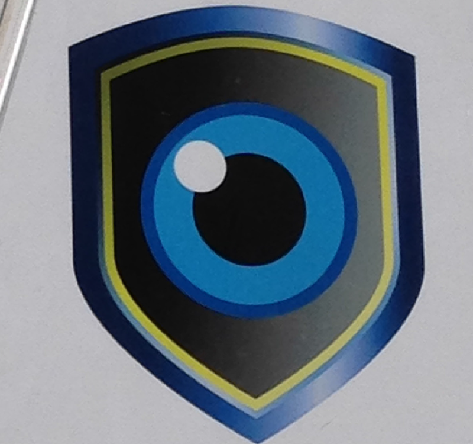Afb. 5.4. Logo van Haags beveiligingsinstantie “de specialist in slimme tijdelijke beveiligings-oplossingen voor uw (leegstaande) object, uw (bouw)terrein en uw evenement locatie.”[5.5] Ook dorpen en steden (waarbij dit een vrij normaal fenomeen is aangezien het komt van de nederzetting heraldiek[Afb. 5.6.1]) >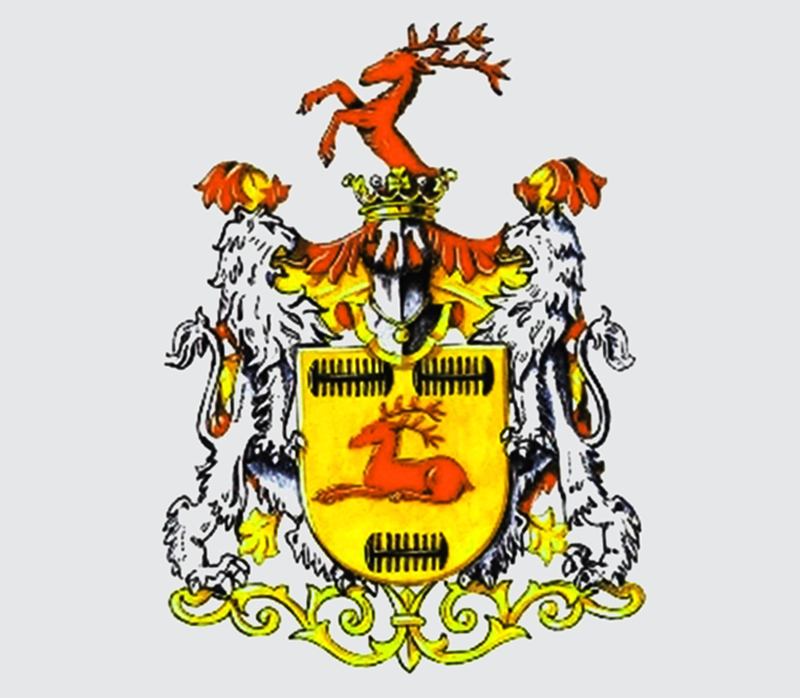Afb. 5.6.1 Wapen van de gemeente Cambuur. Het schild uit het wapen is direct doorvertaald naar het logo van de lokale voetbal club SC Cambuur keren weer terug naar het schild na het ooit te hebben verwijderd uit hun huisstijl. Andere gemeentes kiezen ervoor een moderne variant van hun bestaande wapen te laten ontwerpen. Men heeft het verlangen ergens bij te horen. Iets wat beter te overzien is, dus Nederlander zijn is fijn, maar de schaal daarvan is te groot. Dit is denk ook de hoofdreden dat voetbal of überhaupt sport zo’n populair element is in onze samenleving. Het geeft je de kans ergens één mee te voelen. “Sportief enthousiasme van het publiek is te beschouwen als een andere uitingsvorm van het besef deel te zijn van een bepaalde collectiviteit.”[5.7] Heraldische wapens waren wapens voor niet al te grote nederzettingen. Hier streed je voor. Een plek ter grootte van een stad of dorp. Tegenwoordig strijd je nog maar op één manier met een buurdorp en dat is via sport[Afb. 5.6.2]. >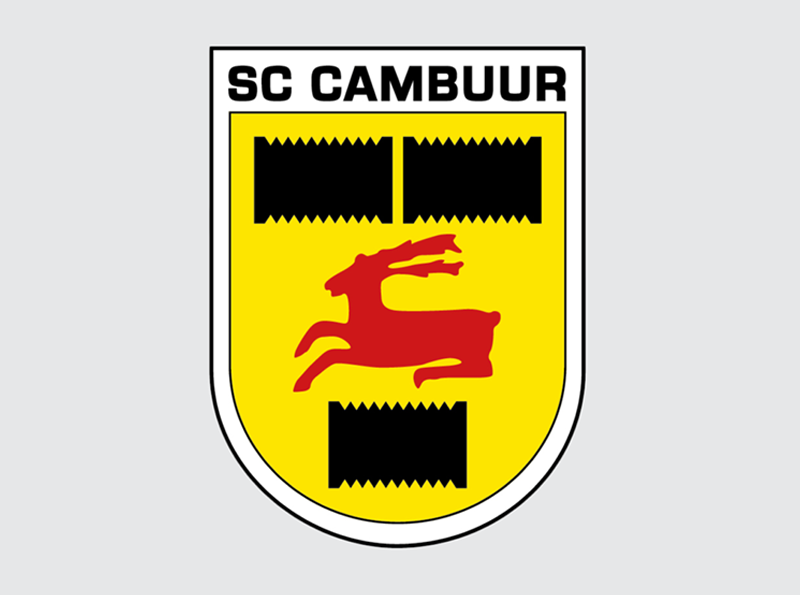Afb. 5.6.2 Logo van voetbalclub SC CambuurNu ook de kerken langzaam verdwijnen en dus men ook daar al niet meer het groepsgevoel kwijt kan, ben ik ervan overtuigd dat we een rijzend gebruik van het schild zullen zien. Voor de komende jaren voorspel ik een exponentiële groei in het gebruik van het schild als logo. Deze voorspelling is gebasseerd op de volgende punten.
1. Dorpen en steden zullen meer saamhorigheid willen creëren gezien het feit dat het land tegenwoordig zo verdeeld is. “Wat moeten politici met zo’n verdeeld land? Ze zien ‘eng nationalisme’, een ‘klassenstrijd’ en ‘groepen die tegenover elkaar staan’.” „Er lopen allerlei breuklijnen door de maatschappij. Tussen jong en oud, vast en flex, tussen allochtoon en autochtoon.” „Ik durf het woord klassenstrijd best in de mond te nemen.”[5.8] “Het begint steeds duidelijker te worden: Nederland raakt verdeeld in twee kampen. Je bent of voor, of tegen vluchtelingen. Een middenweg lijkt er niet te zijn.”[5.9] “Nederlanders raken steeds meer verdeeld in hun mening over moslims in Nederland.” “De groep die negatief is over de islam, is wel gegroeid. 49 procent zegt nu (zeer) negatief te zijn, tegen 33 procent in 2010. De groep die zich positief uitspreekt is geslonken van 14 naar 11 procent, terwijl de neutrale groep ook is afgenomen van 51 naar 37 procent. Vier jaar geleden maakten respondenten nog nauwelijks onderscheid tussen ‘moslims’ en ‘islam’. Vragen over vrijheid van meningsuiting en privacy versus veiligheid leidden ook tot verdeeldheid. De vrijheid van meningsuiting zou niet mogen gelden als er sprake is van discriminatie, vind 51 procent. Ruim een vijfde is het daar niet mee eens en 24 procent is neutraal. Daarnaast zegt 44 procent bereid te zijn vrijheden in te leveren voor meer veiligheid. Een iets grotere groep, 47 procent, wil dat juist niet.”[5.10]
2. Sportclubs willen het broederschap gevoel oproepen aangezien dit een van de weinige plekken is waar mensen nog samenkomen (zie FC Twente[Afb. 4.19] en Heracles[Afb. 4.20]). “Met de verzwakking van het geloof zijn de kerken leeggelopen en hebben stedelijke gemeenschappen een belangrijk sociaal ontmoetingspunt verloren. Het in de kerk samenkomen was niet alleen een kwestie van gemeenschappelijk bidden, maar het was ook een wijze waarop groepsidentiteit tot uitdrukking werd gebracht. Het verschafte een gevoel van erbij horen, een gevoel van ergens thuis zijn.’ De komst van de televisie heeft volgens Morris het aantal gelegenheden voor stedelingen om bijeen te komen en te voelen dat men deel uitmaakt van gemeenschap verder verminderd. ‘Voetbalwedstrijden overleefden deze veranderingen echter en hebben een steeds belangrijkere rol verworven als een middel om lokale binding te representeren. Voetbal biedt niet alleen de mogelijkheid tot sociale identificatie. Het geloof in de teams die men aanhangt komt in de plaats van het geloof in God. Wedstrijden bieden de mogelijkheid om piekervaringen te ondergaan, waarbij jongeren door hun aanmoedigingen, liederen, uitdossing, vlaggen en emblemen hun aanwezigheid in de gemeenschap en hun gedeelde geloof in de gemeenschappelijk zaak kenbaar maken.”[5.11]
3. Commercie wil het product dat ze verkopen een extra zekerheid geven aangezien het vertrouwen in de economie er niet volledig meer is. “Het aantal Nederlanders dat aangeeft niets te merken van het aantrekken van de economie is hoog: 59% stelt helemaal niets van het economisch herstel te merken. Het vertrouwen dat daar het komende jaar verandering in komt is laag: ruim 60% denkt dat de situatie hetzelfde blijft.”[5.12] “Het vertrouwen dat consumenten hebben in de Nederlandse bankensector is het afgelopen jaar nauwelijks toegenomen. Dat blijkt uit de tweede editie van de Vertrouwensmonitor Banken.”[5.13] “World leaders get it: The public doesn’t trust them after decades of rising inequality and feeling left out by global trade.” “Many economists believe the political uncertainty of Brexit and Donald Trump pose major risks to the global economy. Those risks stem from public mistrust for government leaders and their inability to distribute wealth more evenly and help people who believe they have been hurt by trade. “I am seriously concerned on this,” Germany’s finance minister, Wolfgang Schauble, told CNN’s Richard Quest at an International Monetary Fund meeting in Washington. “You can look all over at the advanced economies -- the British referendum, the campaign in the United States ... more and more people don’t trust their elites. They don’t trust their economic leaders, and they don’t trust their political leaders.” (Schauble noted that the public doesn’t trust the media, either.) He’s not alone. Bank of England Governor Mark Carney, three months after Britain voted to leave the European Union, believes more needs to be done to fix income inequality and who benefits from global trade. Saying that global economic growth is low is no longer an excuse, he argues. “Growth has been too low, but also sharing the fruits of growth has not been there,” Carney told Quest.”[5.14] Allemaal elementen die ervoor gaan zorgen dat men terug wil naar zekerheid. James Bridle noemt de tijd waarin we nu leven “the new dark age.”[5.15] Er zal dus worden verlangen naar een ontwerp dat deze zekerheid met zich meebrengt en ons zal beschermen in deze tijden van duisternis, oftewel het schild.
Er is een overmatig gebruik van het schild-symbool. Wil dit symbool in de toekomst nog enige waarde en relevantie hebben, dan moet hier op zeer korte termijn iets aan gedaan worden. Het is tijd om ons grafische schild te laten zakken. De belangrijkste reden hiervoor is dat ik verwacht dat de komende tijd het symbool alleen nog maar meer gebruikt gaat worden. Dit concludeer ik naar aanleiding van de situatie waar wij ons op dit moment in bevinden in de westerse wereld. Gezien de maatschappelijke problemen nationaal, maar ook internationaal zoals het verdwijnen van plekken van samenkomst, verdeeldheid in de samenleving en het gebrek aan vertrouwen in de economie zal men verlangen naar een symbool dat qua (marketing)communicatie het broederschap, saamhorigheidsgevoel en vertrouwen weer terugbrengt. Gezien de grootste geschiedenis, de waarde en de kracht die het schild-symbool heeft en de kans dat het icoon volledig monddood wordt gemaakt, is mijn advies hier wetmatig iets aan te doen. In de middeleeuwen was het gebruik van heraldische wapens ook beschermd en kon je snel zien of een familiewapen echt was of niet. Deze oude regels moeten opnieuw in het leven worden geroepen. Het schild moet worden beschermd! Om dit te bewerkstelligen heb ik een wetsvoorstel geschreven dat het overmatig gebruik van het schild-symbool moet tegen gaan.
KLIK HIER VOOR HET WETSVOORSTEL >
Het schrijven van deze wet is natuurlijk lichtelijk cynisch bedoeld. Een andere manier van het schild-symbool beschermen zou copyright kunnen zijn. Door er bijvoorbeeld voor te zorgen dat UPS het alleen recht heeft het schild te gebruiken, zal het waarschijnlijk nog beter beschermd zijn dan via een staatsmatige wet aangezien de macht van bedrijven vaak verder strekt dan die van een staat. Ik moet wel bekennen dat een onderzoek naar het schild op sommige momenten onbelangrijk leek. Ik twijfel over de relevantie van dit onderwerp gezien de problemen in de wereld. Ik, met mijn mooie huis, mooie vriendin, leuke bijbaan, goeie vrienden, fijne familie, eten in de koelkasten en schoon water uit de kraan zit veilig in Nederland en weet niet waar ik moet beginnen als ik over Wereldse problemen nadenk. Relativeren is zeker belangrijk, maar het niet negeren van je omgeving is minstens net zo belangrijk. Mocht het niet de strijd zijn tussen mens tegen mens dan is het wel de strijd tussen mens en natuur. Ik besef dat ik nu afdwaal van mijn scriptie onderwerp, maar ik denk dat juist de metafoor van het schild hiervoor zoveel kan betekenen. Mijn intenties voor na deze studie zijn een goede baan te vinden en een mooi leven op te bouwen om zo vervolgens alles wat niet in dit mooie leven past te negeren. Ik kies er bewust voor om later achter Amersfoort te wonen, omdat ik vermoed dat het water gaat komen. Is het niet mijn plicht als mens met de vaardigheden van een grafisch ontwerper men hiervoor te waarschuwen? Bescherming is waar alles om draait, alles wat men wil is veiligheid, rust en bescherming. Een dak en vier muren ter bescherming van je slaapplek, een dokter ter bescherming van je gezondheid, wetten ter bescherming van je leven, oogkleppen ter bescherming van je hypocrisie. Met zoveel schilden voor onze neus zien we niet wat er nou daadwerkelijk aan de hand is. We zitten er liever veilig achter, of ze nou leeg zijn of niet, terwijl we de gruwelijkheden die achter deze schilden gaande zijn best wel weten. Hoe relevant mijn visuele onderzoek is tegenover dit soort grote onderwerpen weet ik niet, maar wel weet ik dat het tijd is om de betrouwbaarheid van de huidige schilden om ons heen te controleren. Een vals leeg schild zal niks kunnen beschermen en veroorzaakt alleen maar > onrust. Zodra deze lege, valse schilden zijn verdwenen zal er weer overzicht zijn over wat er daadwerkelijk te gebeuren staat. Laat de schilden zakken ‘let your guard down’, kijk even over de rand van het schild heen. Besef heel even wat er aan de hand is! Of je hier nou direct iets aan kan doen weet ik niet, maar er komt vast een moment, al is het bijvoorbeeld in het stemhokje, dat het herkennen van de valse schilden en het laten zakken van het jouwe, op grote en kleine schaal, heel relevant kan zijn!